Il livello di rete ha il compito fondamentale di permettere il trasferimento dei pacchetti da un host sorgente a un host destinazione attraverso una rete composta da molti router intermedi. A questo livello l’unità fondamentale di informazione che viene instradata attraverso la rete prende il nome di datagramma.
TRASFERIMENTO DATI
Il livello di rete ha come obiettivo principale il trasferimento dei pacchetti da un host a un altro. Per svolgere questa funzione, si distinguono due operazioni fondamentali: inoltro e instradamento, spesso considerate sinonimi nella letteratura, ma concettualmente diverse.
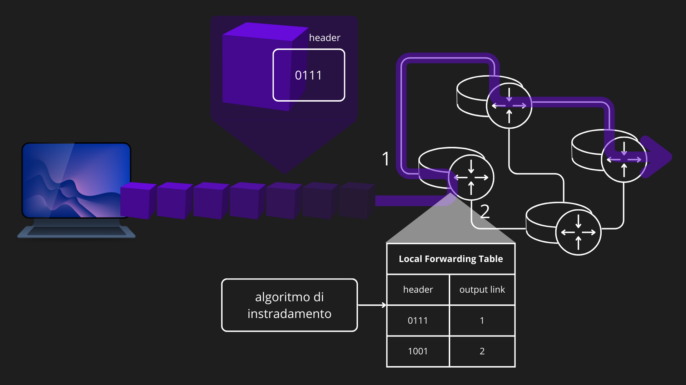
Inoltro (forwarding)
L’inoltro (o forwarding) è l’operazione locale con cui un router, ricevuto un pacchetto su un’interfaccia di ingresso, lo trasferisce sull’interfaccia di uscita appropriata. Questa decisione viene presa consultando la tabella di inoltro (forwarding table), che associa valori dell’intestazione del pacchetto a specifici collegamenti di uscita. L’inoltro avviene in tempi rapidissimi (nanosecondi) ed è tipicamente implementato in hardware.
Instradamento (routing)
L’instradamento è il processo globale che determina i percorsi che i pacchetti devono seguire dalla sorgente alla destinazione. È realizzato tramite algoritmi di routing, che calcolano le informazioni necessarie per popolare le tabelle di inoltro dei router. L’instradamento opera su tempi più lunghi (secondi) ed è implementato in software.
PIANO DI CONTROLLO
Il piano di controllo (control plane) rappresenta la componente del livello di rete responsabile delle decisioni “intelligenti” che determinano come i pacchetti debbano essere instradati attraverso la rete. A differenza del piano dei dati, che si limita a inoltrare i pacchetti in modo rapido e locale, il piano di controllo opera su una scala temporale più ampia e si occupa di calcolare i percorsi, aggiornare le informazioni di rete e garantire che ogni router disponga delle corrette regole di inoltro.
Modello tradizionale
Nel modello tradizionale, questa logica è distribuita: ogni router esegue localmente il proprio algoritmo di instradamento e comunica con gli altri router per costruire una visione coerente della topologia. Attraverso protocolli di routing, i router scambiano informazioni e aggiornano autonomamente le proprie tabelle di inoltro, integrando sia la funzione di instradamento sia quella di inoltro all’interno dello stesso dispositivo. Questo approccio, adottato per molti anni, ha garantito robustezza e autonomia alla rete, ma comporta complessità nella gestione e nella riconfigurazione.
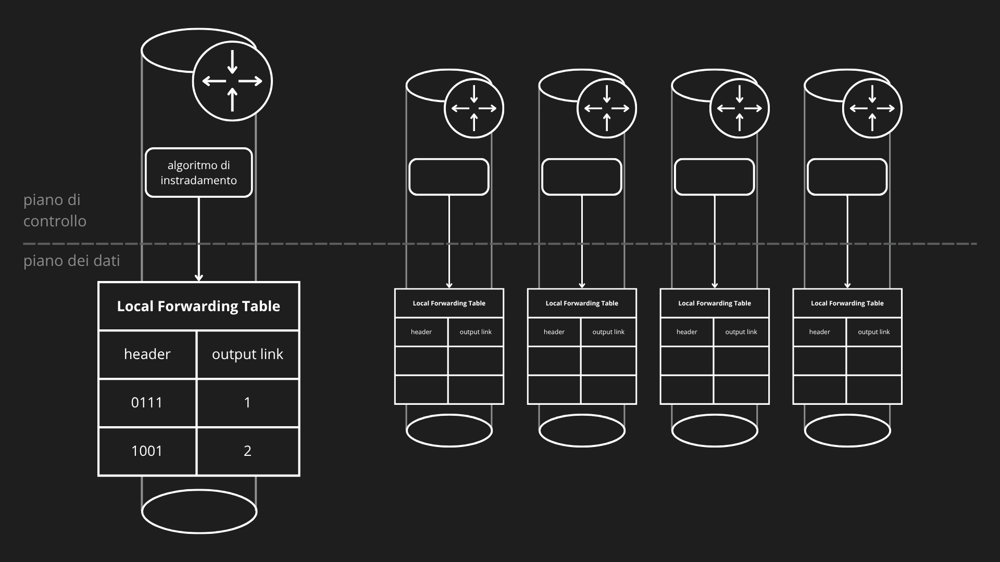
Argomento trattato nel dettaglio nei paragrafi successivi.
Modello SDN
Un’alternativa più recente al modello tradizionale è rappresentata dal paradigma Software-Defined Networking (SDN), che separa fisicamente il piano di controllo dal piano dei dati. In questo modello, i router non eseguono più algoritmi di instradamento: si limitano a inoltrare i pacchetti secondo le regole ricevute. L’intelligenza della rete è concentrata in un controller remoto, un’entità centralizzata che calcola e distribuisce le tabelle di inoltro a tutti i dispositivi. La comunicazione tra controller e router avviene tramite messaggi contenenti le regole di forwarding e altre informazioni di gestione. Questo controller può risiedere in un data center affidabile e ridondato, ed è spesso implementato in software open source, favorendo innovazione, programmabilità e una gestione più flessibile della rete.
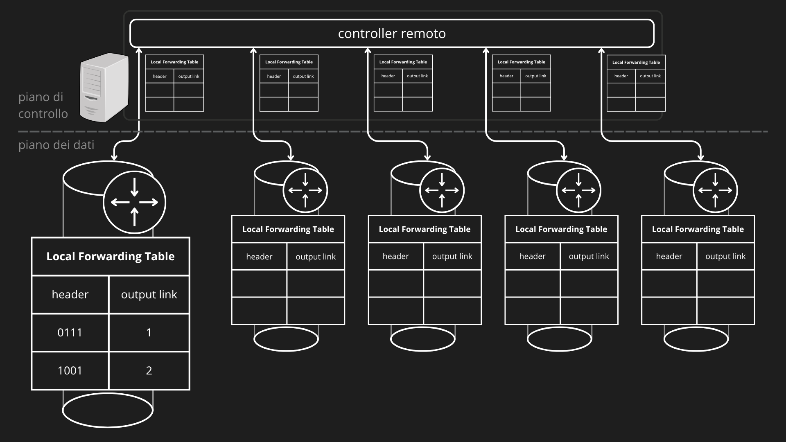
Argomento trattato nel dettaglio nei paragrafi successivi.
PIANO DEI DATI
Il piano dei dati (data plane o forwarding plane) rappresenta la componente del livello di rete responsabile dell’esecuzione pratica e ad altissima velocità delle decisioni prese dal piano di controllo. A differenza del piano di controllo, che calcola le mappe e i percorsi globali della rete su scala temporale più ampia, il piano dei dati opera a livello locale su ogni singolo router e su scale temporali di millisecondi o nanosecondi. Il suo unico compito è esaminare l’intestazione (header) di ogni pacchetto in arrivo, consultare la tabella di inoltro localmente memorizzata e trasferire fisicamente il pacchetto dall’interfaccia di ingresso a quella di uscita corretta.
STRUTTURA DI UN ROUTER
L’architettura di un router è composta da quattro elementi principali: porte di ingresso (input ports), struttura di commutazione (switching fabric), porte di uscita (output ports) e processore di instradamento (routing processor). Queste componenti sono suddivise nei due piani già visti: il forwarding plane (piano dei dati), implementato principalmente in hardware e responsabile dell’inoltro dei pacchetti, e il control plane (piano di controllo), implementato in software e responsabile delle decisioni di instradamento.
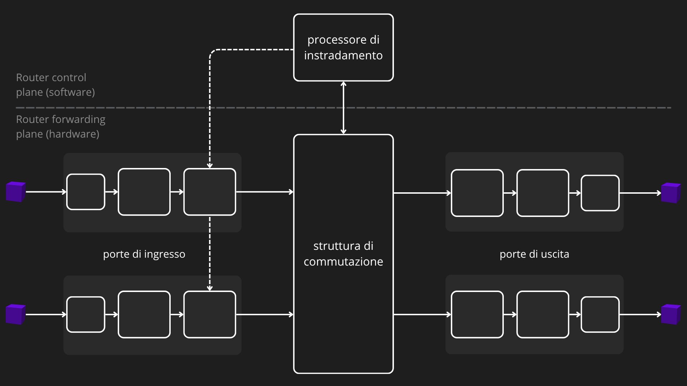
Porte di ingresso
Le porte di ingresso (input ports) rappresentano il punto in cui i pacchetti entrano nel router. L’elaborazione alle porte di ingresso rappresenta una delle funzioni più importanti del router, poiché è in questa fase che viene deciso verso quale porta di uscita dovrà essere inoltrato ogni pacchetto. Il pacchetto attraversa tre fasi principali: terminazione di linea, che implementa le funzioni del livello fisico, elaborazione a livello di collegamento, che gestisce: il controllo delle informazioni presenti nell’intestazione IP (come la versione del protocollo, il checksum e il Time To Live), il protocollo di collegamento, il decapsulamento del frame, e infine ricerca (lookup), inoltro e accodamento.
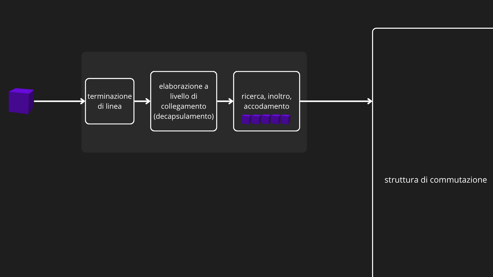
La tabella di inoltro (forwarding table) viene costruita e aggiornata dal processore di instradamento oppure ricevuta da un controller SDN. Per evitare di coinvolgere continuamente il processore centrale, una copia della tabella viene memorizzata direttamente in ogni porta di ingresso (line card). In questo modo ogni porta può prendere autonomamente la decisione di inoltro, rendendo il processo molto più rapido ed efficiente.
Inoltro basato sull’indirizzo di destinazione
Nel caso più semplice, il router effettua un inoltro basato esclusivamente sull’indirizzo IP di destinazione del pacchetto (diverso dal più moderno inoltro generalizzato). Poiché un indirizzo IPv4 è lungo 32 bit, sarebbe teoricamente possibile costruire una tabella con una voce per ciascuno dei circa 4 miliardi di indirizzi possibili, ma una soluzione del genere sarebbe completamente impraticabile sia per lo spazio richiesto sia per i tempi di ricerca.
Example
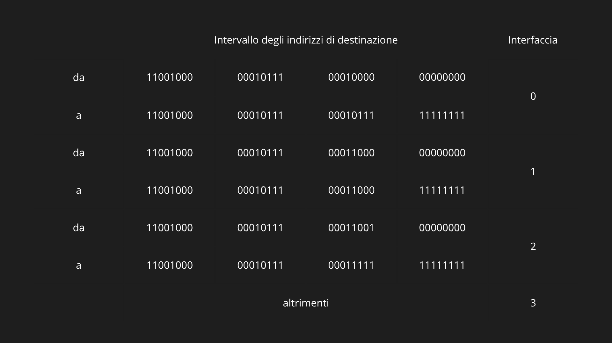
Per questo motivo le tabelle di inoltro non memorizzano tutti i singoli indirizzi, ma prefissi di rete, cioè gruppi di indirizzi che condividono gli stessi bit iniziali. Ogni prefisso è associato a una determinata interfaccia di uscita. Quando arriva un pacchetto, il router confronta il prefisso dell’indirizzo di destinazione con quelli presenti nella tabella e inoltra il pacchetto verso l’interfaccia corrispondente. In questo modo è possibile rappresentare milioni di indirizzi utilizzando poche righe nella tabella.
Example
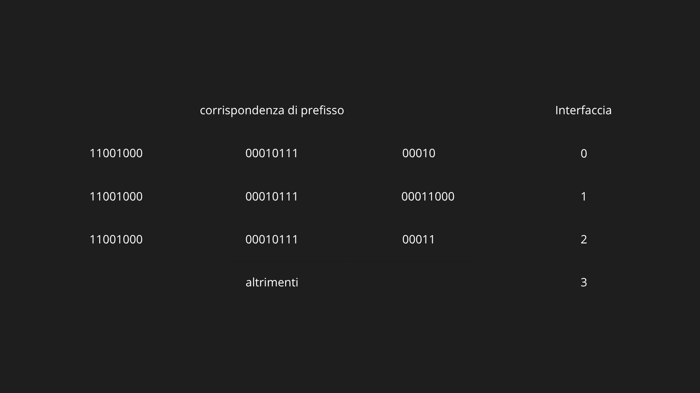
Important
Può però verificarsi il caso in cui un indirizzo di destinazione corrisponda a più prefissi contemporaneamente. In questa situazione il router applica la regola della corrispondenza con il prefisso più lungo (Longest Prefix Match): viene scelta la voce della tabella con il maggior numero di bit iniziali coincidenti con l’indirizzo del pacchetto, perché rappresenta il percorso più specifico. Questa regola garantisce che il router scelga sempre l’instradamento più preciso disponibile.
Una volta individuata la porta di uscita, il pacchetto viene inviato alla struttura di commutazione (switching fabric). Se quest’ultima è momentaneamente occupata da altri pacchetti provenienti da differenti porte di ingresso, il pacchetto viene accodato nella porta di ingresso e attende il proprio turno prima di essere trasferito.
Struttura di commutazione
La struttura di commutazione (switching fabric) costituisce il cuore del router ed è il componente che trasferisce i pacchetti dalla porta di ingresso alla porta di uscita. Dopo che la porta di ingresso ha stabilito, tramite la tabella di inoltro, quale debba essere l’interfaccia di destinazione, il pacchetto attraversa la struttura di commutazione per raggiungere la porta di uscita corretta. Esistono tre principali tecniche di commutazione:
Commutazione in memoria
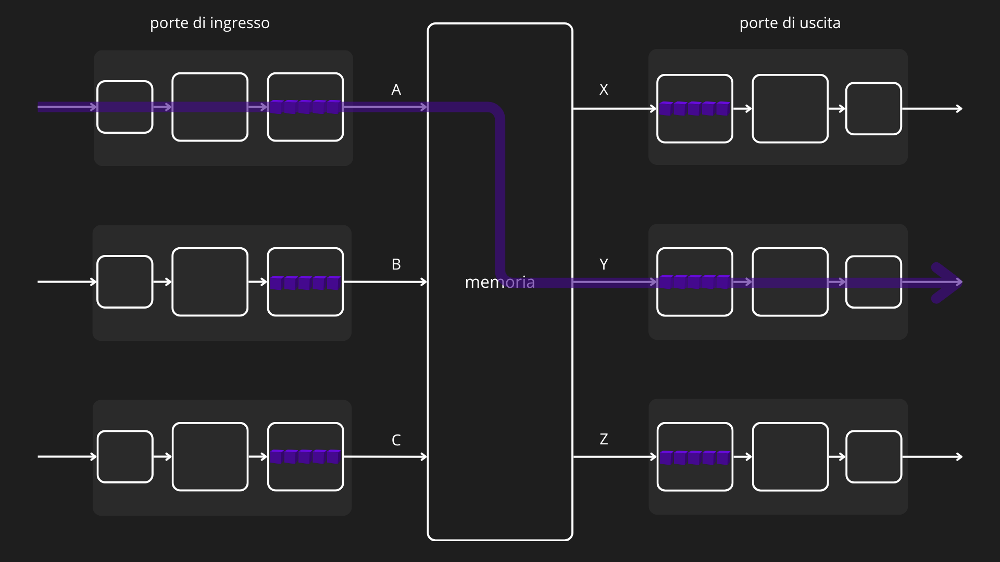
La commutazione in memoria è la tecnica utilizzata dai primi router, che erano essenzialmente normali calcolatori. In questa architettura il pacchetto viene copiato dalla porta di ingresso nella memoria centrale, dove il processore di instradamento (CPU) legge l’indirizzo di destinazione, consulta la tabella di inoltro e copia successivamente il pacchetto nella memoria della porta di uscita appropriata. Poiché ogni pacchetto deve essere scritto e poi letto dalla memoria, il throughput massimo è limitato dalla velocità della memoria stessa. Inoltre è possibile effettuare una sola operazione di lettura o scrittura alla volta, per cui due pacchetti non possono essere inoltrati contemporaneamente, anche se diretti verso porte di uscita differenti. Nei router moderni che adottano ancora questo metodo, la ricerca dell’indirizzo di destinazione viene eseguita direttamente dai processori presenti sulle line card, riducendo il carico della CPU centrale e rendendo l’architettura simile a un sistema multiprocessore con memoria condivisa.
Commutazione tramite bus
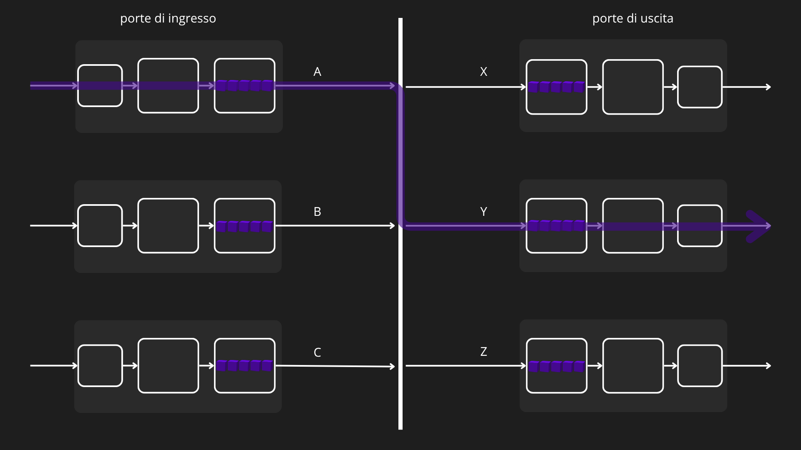
La commutazione tramite bus elimina la necessità di utilizzare la memoria centrale per ogni trasferimento. In questo caso la porta di ingresso aggiunge al pacchetto una etichetta interna di commutazione, contenente l’identificativo della porta di uscita, e trasmette il pacchetto su un bus condiviso. Tutte le porte di uscita ricevono il pacchetto, ma soltanto quella il cui identificativo corrisponde all’etichetta lo acquisisce, rimuovendo poi l’etichetta stessa. Questo metodo è più semplice e veloce della commutazione in memoria, ma presenta un importante limite: sul bus può transitare un solo pacchetto alla volta. Se più pacchetti arrivano contemporaneamente da porte di ingresso diverse, solo uno può attraversare il bus mentre gli altri devono attendere. Di conseguenza il throughput complessivo è limitato dalla larghezza di banda del bus. Nonostante questo limite, tale soluzione è ancora adeguata per router utilizzati nelle reti di accesso e nelle reti aziendali.
Commutazione tramite rete di interconnessione
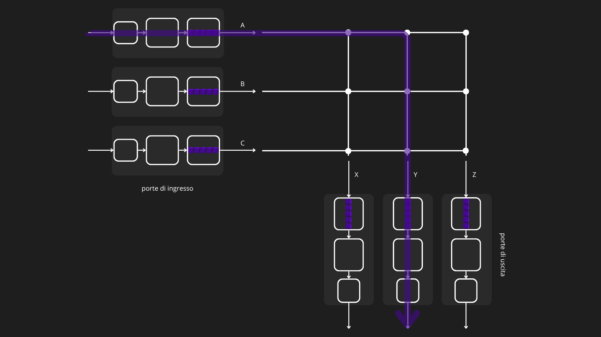
Per superare le limitazioni del bus condiviso viene utilizzata la commutazione attraverso rete di interconnessione, detta anche crossbar switch. In questa architettura le porte di ingresso e di uscita sono collegate mediante una matrice di bus verticali e orizzontali, i cui punti di incrocio possono essere aperti o chiusi da un controller. Quando un pacchetto arriva a una porta di ingresso, il controller attiva il collegamento con la porta di uscita richiesta, permettendo il trasferimento diretto del pacchetto. Il principale vantaggio di questa soluzione è che più pacchetti possono essere inoltrati contemporaneamente, purché utilizzino porte di ingresso e di uscita differenti. La matrice di commutazione è infatti definita non-blocking, poiché un pacchetto viene bloccato solo se un altro pacchetto è già diretto verso la stessa porta di uscita. Se due pacchetti provenienti da porte di ingresso diverse devono raggiungere la stessa porta di uscita, uno dei due dovrà comunque attendere nella coda della porta di ingresso.
Porte di uscita
L’elaborazione alle porte di uscita (output ports) rappresenta l’ultima fase del processo di inoltro di un pacchetto all’interno del router. Dopo che il pacchetto è stato trasferito dalla struttura di commutazione, esso viene memorizzato nella coda della porta di uscita, dove attende il proprio turno per essere trasmesso sul collegamento di rete.
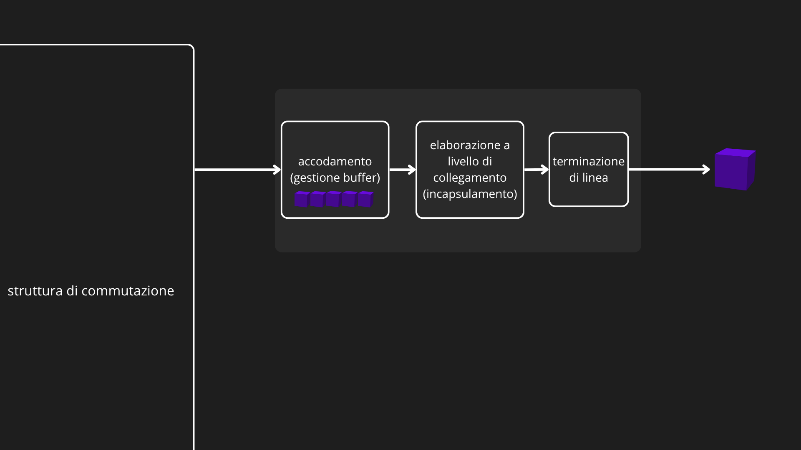
Le porte di uscita svolgono diverse operazioni prima della trasmissione. Innanzitutto, uno schedulatore di pacchetti (packet scheduler) seleziona quale pacchetto debba essere trasmesso per primo tra quelli presenti nella coda. Successivamente vengono eseguite le funzionalità del livello di collegamento, come l’incapsulamento del pacchetto nel frame appropriato, e del livello fisico, che provvede all’effettiva trasmissione dei bit sul mezzo trasmissivo. In questo modo il pacchetto lascia il router e prosegue il proprio percorso verso la destinazione finale.
Buffer e accodamenti
L’accodamento dei pacchetti può verificarsi sia alle porte di ingresso che a quelle di uscita del router. Nel primo caso si verifica quando la struttura di commutazione non riesce a trasferire i pacchetti abbastanza rapidamente, mentre nel secondo caso avviene quando più pacchetti sono destinati contemporaneamente alla stessa porta di uscita. In entrambe le situazioni i pacchetti vengono temporaneamente memorizzati in apposite code (buffer). Se queste si riempiono completamente, i nuovi pacchetti vengono scartati. Per questo motivo il corretto dimensionamento dei buffer è fondamentale per limitare la perdita di pacchetti e garantire un buon funzionamento della rete.
Dimensionamento dei buffer
I buffer dei router hanno il compito di assorbire le variazioni temporanee del traffico e di evitare perdite di pacchetti durante i periodi di congestione. Per molti anni si è utilizzata una regola empirica secondo cui la dimensione del buffer doveva essere pari al prodotto tra il Round Trip Time medio della rete e la capacità del collegamento :
Example
Ad esempio, con un collegamento da 10 Gbps e un RTT di 250 ms, sarebbe necessario un buffer di circa 2,5 Gbit.
Studi più recenti hanno però dimostrato che, quando sul collegamento transitano molti flussi TCP contemporaneamente, è possibile utilizzare buffer molto più piccoli senza compromettere le prestazioni. In questo caso la dimensione consigliata diventa:
dove rappresenta il numero di flussi TCP attivi. Poiché nei grandi router di dorsale il numero di flussi può essere molto elevato, questa formula permette di ridurre notevolmente la quantità di memoria necessaria, mantenendo comunque elevate prestazioni e un corretto funzionamento della rete.
Schedulazione dei pacchetti
Quando più pacchetti sono presenti contemporaneamente nella coda di una porta di uscita, il router deve stabilire l’ordine con cui trasmetterli sul collegamento. Questo processo prende il nome di schedulazione dei pacchetti (packet scheduling). L’algoritmo di schedulazione influenza direttamente le prestazioni della rete, poiché determina il tempo di attesa dei pacchetti e permette, se necessario, di assegnare priorità a determinati tipi di traffico. Le principali politiche di schedulazione sono FIFO (o FCFS), Priority Queuing, Round Robin e Weighted Fair Queuing (WFQ).
Gli algoritmi di scheduling sono già stati affrontati qui (nell’ambito dei processi).
Weighted Fair Queuing (WFQ)
Il WFQ è una versione più avanzata del Round Robin. Anche in questo caso i pacchetti vengono suddivisi in classi e serviti in maniera ciclica, ma a ogni classe viene assegnato un peso (weight) che determina la quantità di banda a essa riservata. In particolare, se una classe ha peso , essa riceverà una frazione della capacità del collegamento proporzionale al rapporto:
dove il denominatore rappresenta la somma dei pesi di tutte le classi che hanno pacchetti in attesa. Se la capacità del collegamento è , la banda minima garantita alla classe sarà:
Grazie a questo meccanismo, WFQ garantisce una distribuzione equa ma non necessariamente uguale della banda, consentendo di assegnare più risorse ai flussi considerati più importanti senza penalizzare completamente gli altri. Per questo motivo è uno degli algoritmi di schedulazione più utilizzati nei router moderni per implementare meccanismi di Quality of Service (QoS).
Processore di instradamento
Il processore di instradamento appartiene invece al control plane ed esegue tutte le funzioni di controllo del router. Nei router tradizionali si occupa dell’esecuzione dei protocolli di routing, della costruzione e dell’aggiornamento delle tabelle di inoltro e della gestione delle informazioni sullo stato dei collegamenti. Nei router basati su SDN comunica con il controller centrale, ricevendo da quest’ultimo le tabelle di inoltro da installare nelle porte di ingresso. Inoltre svolge funzioni di gestione e monitoraggio della rete.
PROTOCOLLO IP
Il protocollo Internet (IP) è il protocollo fondamentale del livello di rete e si occupa del trasferimento dei datagrammi tra host appartenenti a reti diverse. Attualmente sono utilizzate due versioni del protocollo: IPv4, ancora la più diffusa, e IPv6, sviluppata per sostituire IPv4 e risolverne alcune limitazioni, in particolare l’esaurimento degli indirizzi disponibili. Prima di introdurre IPv6, è necessario comprendere il funzionamento di IPv4 e il formato dei suoi datagrammi.
Formato dei datagrammi IPv4
Un datagramma IPv4 è formato da:
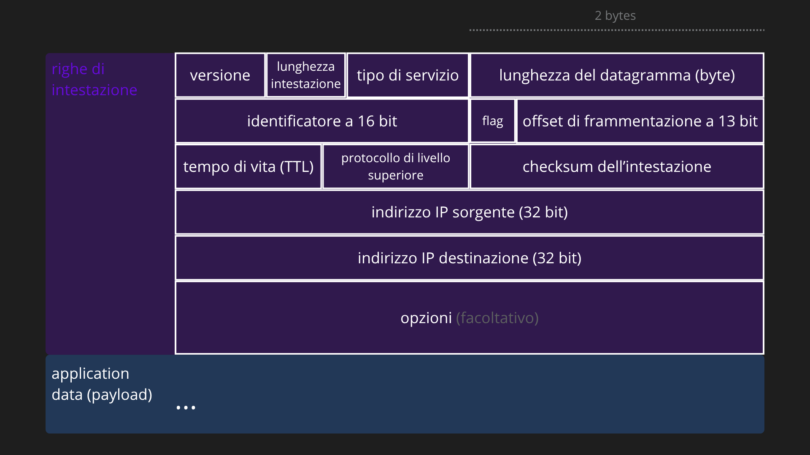
- Numero di versione: indica quale versione del protocollo IP viene utilizzata, permettendo ai router di interpretare correttamente il datagramma.
- Lunghezza dell’intestazione (Header Length): specifica la dimensione dell’header, che normalmente è pari a 20 byte, ma può aumentare se sono presenti opzioni.
- Tipo di Servizio (Type of Service - TOS): consente di distinguere diverse tipologie di traffico, ad esempio quello in tempo reale, che richiede bassa latenza, da quello meno sensibile ai ritardi.
- Lunghezza del datagramma: indica la dimensione complessiva del pacchetto (header più dati) e può raggiungere un massimo di 65.535 byte.
- Identificatore, Flag e Offset di frammentazione: campi utilizzati durante la frammentazione dei datagrammi.
- Time To Live (TTL): viene decrementato da ogni router attraversato per evitare che un datagramma rimanga indefinitamente in circolazione.
- Protocollo: indica quale protocollo di trasporto dovrà ricevere i dati una volta arrivati a destinazione (ad esempio TCP oppure UDP).
- Checksum dell’intestazione: permette ai router di individuare eventuali errori nei bit dell’header. Poiché alcuni campi, come il TTL, vengono modificati durante l’inoltro, il checksum deve essere ricalcolato da ogni router attraversato dal datagramma.
- Indirizzi IP sorgente e destinazione: identificano rispettivamente il mittente e il destinatario del datagramma.
- Opzioni: utilizzato raramente per estendere le funzionalità del protocollo.
- Payload contiene generalmente il segmento del livello di trasporto (TCP o UDP), ma può trasportare anche altri tipi di messaggi, come quelli del protocollo ICMP.
Example
In assenza di opzioni, un datagramma IPv4 possiede un’intestazione di 20 byte; se trasporta un segmento TCP, l’overhead complessivo diventa normalmente di 40 byte, ossia 20 byte di intestazione IP e 20 byte di intestazione TCP.
Frammentazione dei datagrammi IPv4
Durante il percorso tra sorgente e destinazione, un datagramma IP può attraversare reti che utilizzano protocolli di collegamento differenti, ciascuno caratterizzato da una propria MTU (Maximum Transmission Unit), cioè la dimensione massima del pacchetto che può essere trasportato all’interno di un frame.
Frammentazione
Se un router riceve un datagramma più grande della MTU del collegamento di uscita, non può trasmetterlo direttamente. In questo caso il router esegue la frammentazione, suddividendo il datagramma originale in più frammenti, ciascuno sufficientemente piccolo da poter attraversare il collegamento successivo. Ogni frammento diventa a sua volta un nuovo datagramma IP, dotato della propria intestazione.
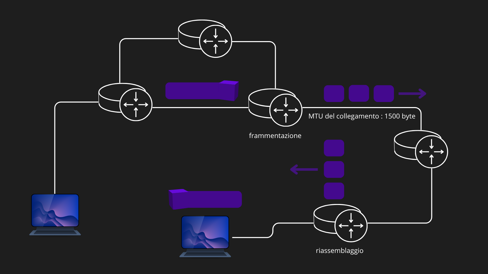
Riassemblaggio
A differenza dei router, gli host destinatari hanno il compito di riassemblare i frammenti nel datagramma originale prima di consegnarlo al livello di trasporto. Questa scelta progettuale permette di mantenere i router più semplici e veloci, demandando la ricostruzione del datagramma ai sistemi terminali. Per consentire il corretto riassemblaggio vengono utilizzati tre campi dell’intestazione IP:
- Identificatore, uguale per tutti i frammenti appartenenti allo stesso datagramma e permette al destinatario di riconoscerli.
- Flag, indica se il frammento è l’ultimo della sequenza oppure se ne seguiranno altri.
- Offset di frammentazione, specifica la posizione occupata da ciascun frammento all’interno del datagramma originale, consentendo di ricostruire correttamente l’ordine dei dati.
Poiché il protocollo IP offre un servizio non affidabile, alcuni frammenti potrebbero andare persi durante la trasmissione. Se anche un solo frammento non raggiunge la destinazione, il datagramma non può essere ricostruito correttamente.
Indirizzamento IPv4
L’indirizzamento IPv4 assegna un indirizzo univoco a ogni interfaccia di host e router, e non direttamente al dispositivo. Un host possiede generalmente una sola interfaccia di rete, mentre un router ne possiede almeno due, poiché deve ricevere i datagrammi da un collegamento e inoltrarli su un altro. Ogni interfaccia deve quindi avere un proprio indirizzo IP. Un indirizzo IPv4 è composto da 32 bit (4 byte), per un totale di circa 4 miliardi di indirizzi possibili (2³²). Normalmente gli indirizzi sono rappresentati nella notazione decimale puntata, costituita da quattro numeri decimali separati da punti (ad esempio 193.32.216.9), dove ogni numero rappresenta un byte dell’indirizzo.
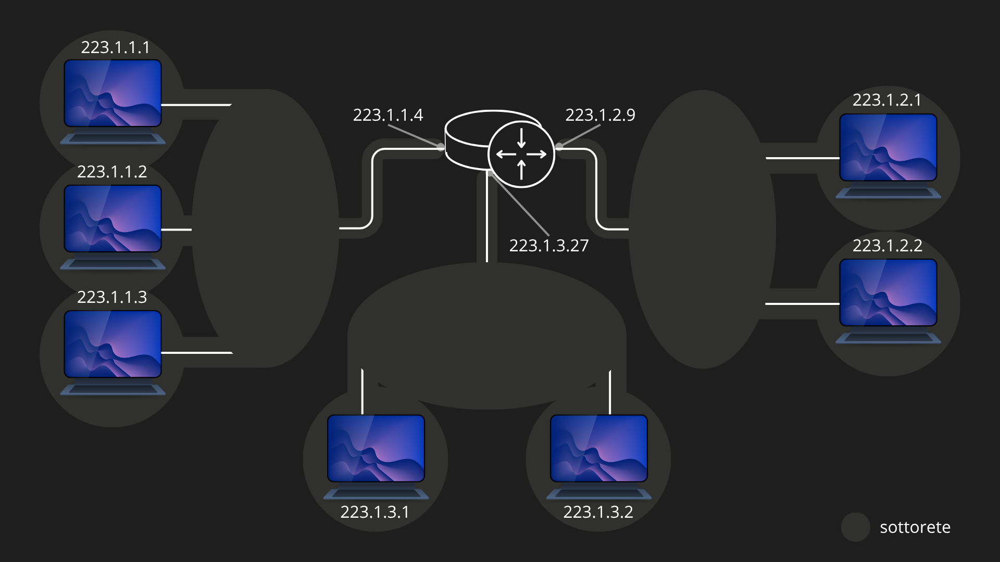
N.B. Nell’immagine i primi 2 byte sono sempre uguali per ogni indirizzo: 223.1, ciò significa che l’intera infrastruttura appartiene alla stessa macro-rete principale. Il terzo byte invece cambia in ogni sottorete, mentre il quarto identifica i singoli host.
Sottorete (subnet)
Gli indirizzi IP sono organizzati in sottoreti (subnet). Una sottorete è un insieme di interfacce collegate tra loro senza l’intervento di router (tutti i dispositivi che appartengono alla stessa sottorete comunicano in modo diretto a livello fisico, utilizzando switch, hub o cavi diretti) e che condividono lo stesso prefisso di rete.
N.B. Una sottorete non contiene per forza host al suo interno, anche un singolo collegamento punto a punto tra le interfacce di due router è una sottorete indipendente.
Classes InterDomain Routing (CIDR)
Per gestire in modo efficiente l’assegnazione degli indirizzi Internet viene utilizzato il CIDR (Classless InterDomain Routing). In questo schema un indirizzo è espresso nella forma a.b.c.d/x, dove x indica la lunghezza del prefisso di rete. I primi x bit identificano la rete dell’organizzazione, mentre i restanti 32 − x bit identificano gli host e possono essere ulteriormente suddivisi in sottoreti interne. Grazie al CIDR i router esterni devono considerare soltanto il prefisso di rete per inoltrare i pacchetti, riducendo notevolmente la dimensione delle tabelle di inoltro.
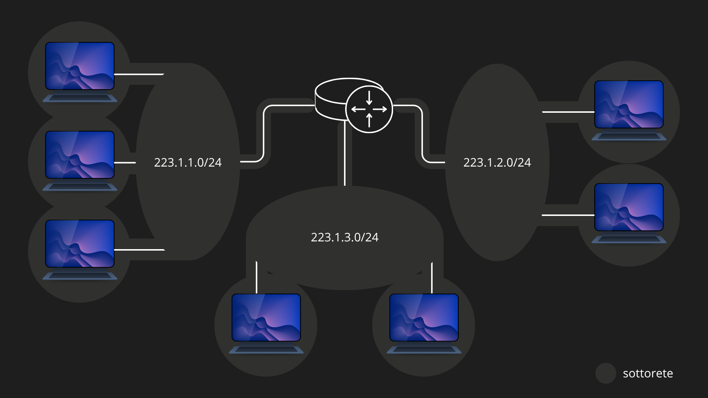
Nell’immagine la sottorete a sinistra viene identificata tramite una notazione del tipo 223.1.1.0/24, dove /24 indica che i primi 24 bit (3 byte) rappresentano la parte di rete (prefisso), mentre i restanti bit identificano i singoli host appartenenti a quella sottorete. Per individuare le sottoreti di una rete è sufficiente separare tutte le interfacce dei router: ogni gruppo di dispositivi rimasto connesso costituisce una sottorete distinta.
Tip
Un indirizzo particolare è l’indirizzo broadcast 255.255.255.255, utilizzato per inviare un datagramma a tutti gli host appartenenti alla stessa sottorete. Generalmente questo tipo di messaggio non viene inoltrato dai router verso altre sottoreti.
Assegnazione degli indirizzi IP
L’assegnazione degli indirizzi IP è organizzata in modo gerarchico. Al vertice si trova ICANN (Internet Corporation for Assigned Names and Numbers), l’organizzazione responsabile della gestione globale dello spazio degli indirizzi IP. ICANN non assegna direttamente gli indirizzi ai singoli utenti, ma distribuisce grandi blocchi di indirizzi ai registri Internet regionali (RIR), come RIPE per l’Europa o ARIN per il Nord America. Questi registri assegnano a loro volta blocchi di indirizzi ai provider di servizi Internet (ISP), che li suddividono ulteriormente e li distribuiscono alle aziende, alle università e ai clienti finali.Una volta che un’organizzazione dispone di un blocco di indirizzi IP, deve assegnarne uno a ciascun dispositivo della propria rete. Questa operazione può essere effettuata manualmente, configurando ogni dispositivo singolarmente, oppure automaticamente tramite il DHCP (Dynamic Host Configuration Protocol).
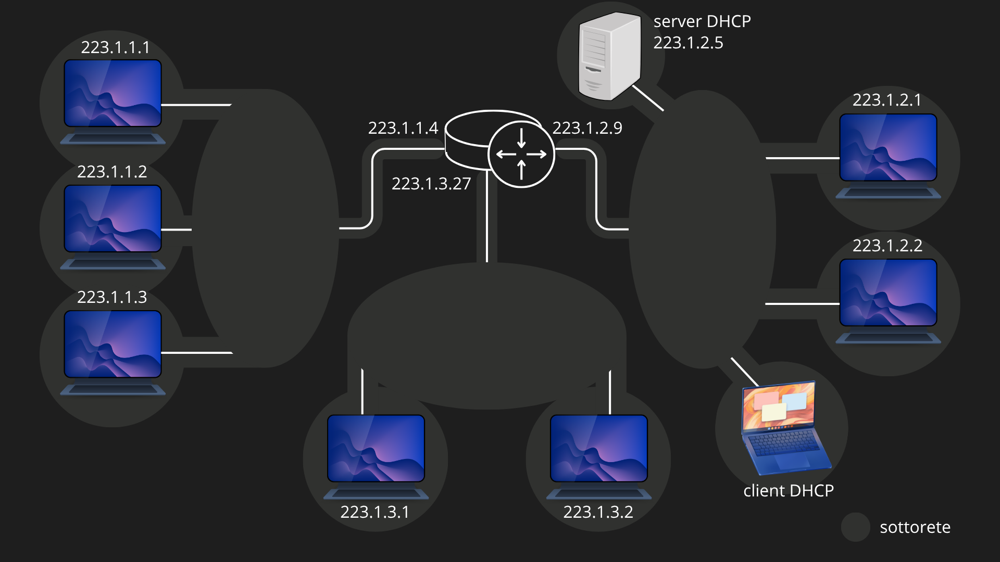
Oltre all’indirizzo IP, DHCP fornisce automaticamente anche altri parametri indispensabili per la comunicazione in rete, come la maschera di sottorete, che identifica la rete di appartenenza del dispositivo, il gateway predefinito (default gateway), cioè il router attraverso cui il dispositivo comunica con altre reti, e l’indirizzo del server DNS, necessario per tradurre i nomi di dominio (ad esempio google.com) nei corrispondenti indirizzi IP.
Protocollo DHCP
DHCP è un protocollo client-server. Il client è il dispositivo che si collega alla rete e richiede una configurazione, mentre il server DHCP è il dispositivo che assegna gli indirizzi e gli altri parametri di rete (guarda immagine sopra). L’assegnazione dell’indirizzo avviene attraverso quattro messaggi, spesso ricordati con l’acronimo DORA (Discover, Offer, Request, Acknowledgment).
- DHCP Discover: quando un dispositivo si collega alla rete, non conosce ancora il proprio indirizzo IP né sa dove si trovi il server DHCP. Per questo invia un messaggio in broadcast, cioè destinato a tutti i dispositivi della sottorete, chiedendo se esiste un server DHCP disponibile.
- DHCP Offer: uno o più server DHCP ricevono la richiesta e rispondono proponendo un indirizzo IP libero, insieme agli altri parametri di configurazione e alla durata della concessione (lease time).
- DHCP Request: il client sceglie una delle offerte ricevute e comunica al server di voler utilizzare quell’indirizzo IP.
- DHCP ACK (Acknowledgment): il server conferma definitivamente l’assegnazione dell’indirizzo. A questo punto il client può iniziare a comunicare sulla rete utilizzando la configurazione ricevuta.
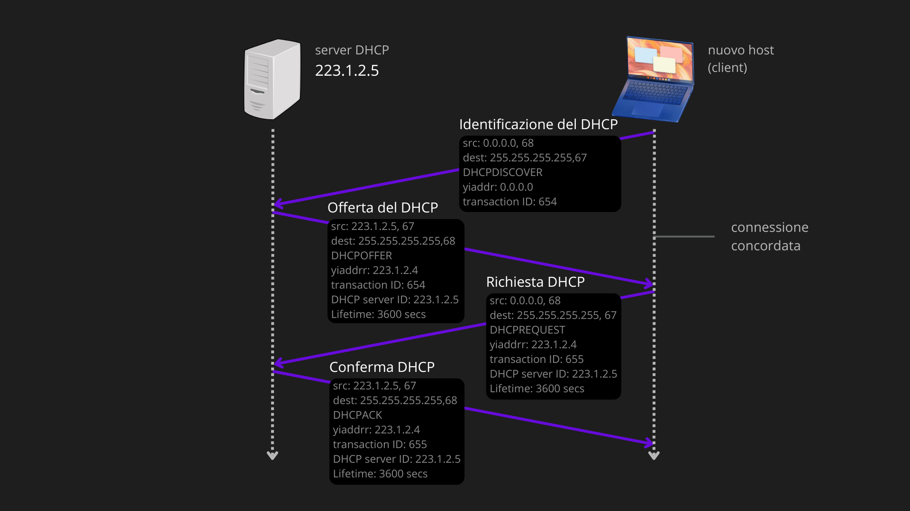
L’indirizzo assegnato tramite DHCP non è necessariamente permanente. Nella maggior parte delle reti viene concesso solo per un certo periodo di tempo (lease), che può variare da alcune ore a diversi giorni. Prima della scadenza, il client può richiedere automaticamente il rinnovo della concessione, continuando così a utilizzare lo stesso indirizzo IP.
Hint
Uno dei principali vantaggi di DHCP è la semplicità di gestione: gli amministratori non devono configurare manualmente ogni dispositivo e gli utenti possono collegarsi alla rete senza effettuare alcuna impostazione. Per questo DHCP è largamente utilizzato nelle reti domestiche, aziendali e nelle reti Wi-Fi, dove i dispositivi si collegano e si scollegano frequentemente. Un limite del DHCP riguarda però la mobilità. Se un dispositivo si sposta da una sottorete a un’altra (ad esempio un portatile che passa dalla rete Wi-Fi dell’università a quella di casa), entra in una rete diversa e il server DHCP della nuova rete gli assegna generalmente un nuovo indirizzo IP. Poiché una connessione TCP è identificata anche dagli indirizzi IP dei due estremi, il cambiamento dell’indirizzo interrompe le connessioni già attive. Per risolvere questo problema sono stati sviluppati protocolli di Mobile IP, che consentono a un dispositivo di mantenere lo stesso indirizzo IP anche quando cambia rete, garantendo la continuità delle comunicazioni.
NAT (Network Address Translation)
Il NAT (Network Address Translation) è una tecnica che consente a più dispositivi di una rete privata di condividere un unico indirizzo IP pubblico per comunicare con Internet. Quando un host della rete locale invia un pacchetto verso l’esterno, il router NAT sostituisce l’indirizzo IP privato del mittente con l’indirizzo IP pubblico della propria interfaccia WAN (cioè quella collegata a Internet). Di conseguenza, dal punto di vista della rete pubblica, tutte le comunicazioni sembrano provenire dallo stesso dispositivo, ovvero dal router, mentre gli indirizzi IP dei dispositivi interni rimangono nascosti. Per consentire a più dispositivi di utilizzare contemporaneamente lo stesso indirizzo IP pubblico, il router mantiene una tabella di traduzione (NAT Translation Table), nella quale registra l’associazione tra indirizzo IP privato e numero di porta originali e il corrispondente indirizzo IP pubblico del router e nuovo numero di porta. Ogni volta che un host interno invia un pacchetto verso Internet, il router NAT sostituisce l’indirizzo IP sorgente con il proprio indirizzo IP pubblico e assegna un nuovo numero di porta sorgente disponibile, memorizzando tale associazione nella tabella. Quando arriva la risposta dal server remoto, il router consulta la tabella, ripristina l’indirizzo IP e il numero di porta originali e inoltra il pacchetto al corretto dispositivo della rete privata. In questo modo un unico indirizzo IP pubblico può gestire insieme decine di migliaia di connessioni provenienti da host diversi.
Important
In genere gli indirizzi IP privati vengono assegnati automaticamente dal server DHCP integrato nel router, mentre il router ottiene il proprio indirizzo IP pubblico dal server DHCP dell’ISP. In questo modo la configurazione degli indirizzi avviene automaticamente sia all’interno della rete locale sia verso Internet.
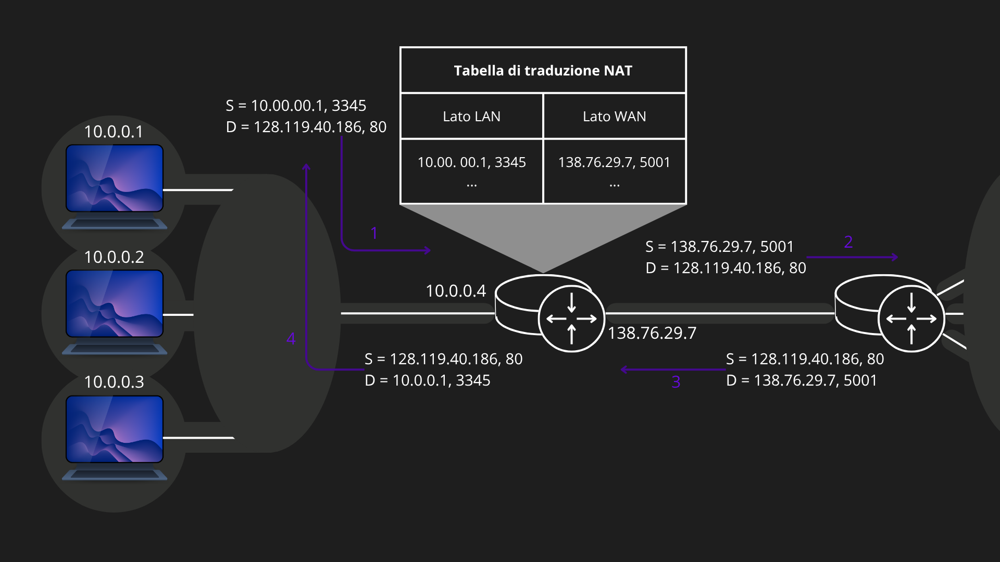
Example
Ad esempio, se il computer 10.0.0.1 invia una richiesta Web con porta sorgente 3345, il router può trasformarla nell’indirizzo pubblico 138.76.29.7 con porta 5001. Il server remoto risponderà quindi all’indirizzo 138.76.29.7:5001. Quando la risposta del server raggiunge il router, quest’ultimo consulta la tabella di traduzione, individua la corrispondenza con 10.0.0.1:3345, ripristina l’indirizzo e la porta originali e inoltra il pacchetto al corretto dispositivo della rete locale. In questo modo il router è in grado di distinguere le connessioni provenienti dai diversi host anche se tutti condividono lo stesso indirizzo IP pubblico.
Il NAT è stato introdotto principalmente per rallentare l’esaurimento degli indirizzi IPv4 e semplificare la gestione delle reti domestiche e aziendali. Infatti, grazie ad esso l’ISP deve assegnare un solo indirizzo IP pubblico al router, mentre tutti i dispositivi della rete locale utilizzano indirizzi IP privati. Tuttavia questo meccanismo è criticato da alcuni in quanto viola il principio delle connessioni end-to-end.
Formato dei datagrammi IPv6
IPv6 (Internet Protocol versione 6) è il successore di IPv4, sviluppato dall’IETF nei primi anni ‘90 per risolvere il problema dell’esaurimento degli indirizzi IPv4 e introdurre alcuni miglioramenti al protocollo. La principale novità è l’utilizzo di indirizzi a 128 bit invece dei 32 bit di IPv4, che rendono disponibile uno spazio di indirizzamento praticamente inesauribile. Il formato del datagramma IPv6 è stato semplificato per rendere più efficiente l’elaborazione da parte dei router. L’intestazione ha una lunghezza fissa di 40 byte e contiene i campi principali:
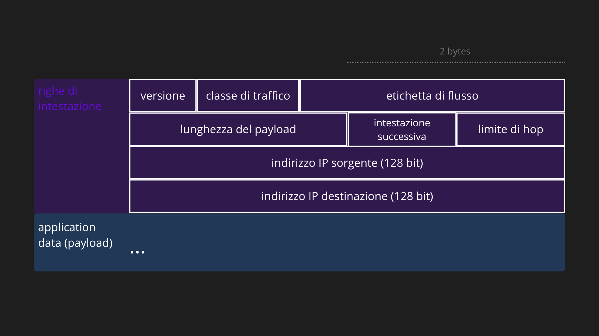
- Versione: 4 bit, indica la versione del protocollo IP utilizzata (per IPv6 il valore è 6).
- Classe di traffico: permette di assegnare priorità a determinati pacchetti o flussi di dati, ad esempio per applicazioni in tempo reale.
- Etichetta di flusso: identifica un flusso di datagrammi che richiede un trattamento particolare da parte della rete.
- Lunghezza del payload: indica la dimensione, in byte, dei dati trasportati dal datagramma, esclusa l’intestazione.
- Intestazione successiva: specifica il protocollo del livello superiore a cui saranno consegnati i dati, ad esempio TCP o UDP.
- Limite di hop: viene diminuito di 1 da ogni router attraversato, quando raggiunge 0 il datagramma viene eliminato, evitando che circoli indefinitamente.
- Indirizzi sorgente e destinazione: contengono gli indirizzi IPv6 a 128 bit del mittente e del destinatario.
- Payload: il contenuto del datagramma, che viene consegnato al protocollo indicato nel campo Intestazione successiva una volta raggiunta la destinazione.
Ottimizzazioni e perfezionamenti IPv6
Per migliorare le prestazioni della rete, IPv6 elimina alcune funzionalità presenti in IPv4. La frammentazione dei pacchetti non viene più effettuata dai router intermedi, ma esclusivamente dal nodo sorgente e dal nodo destinatario. Inoltre è stato eliminato il checksum dell’intestazione, poiché il controllo degli errori è già svolto dai protocolli di livello superiore e di collegamento. Anche il campo Opzioni è stato rimosso dall’intestazione principale e gestito tramite intestazioni di estensione, mantenendo così l’intestazione standard sempre della stessa dimensione. Infine, oltre agli indirizzi unicast e multicast, IPv6 introduce anche gli indirizzi anycast, che consentono di consegnare un pacchetto a uno qualsiasi dei dispositivi appartenenti a un determinato gruppo, generalmente quello più vicino.
Tunneling IPv6
La transizione da IPv4 a IPv6 è stata progettata in modo graduale, poiché i dispositivi IPv4 non sono in grado di interpretare direttamente i datagrammi IPv6. Una delle tecniche più utilizzate è il tunneling, che permette di trasportare un datagramma IPv6 all’interno di un datagramma IPv4 durante l’attraversamento di reti che supportano solo IPv4. Il nodo di ingresso del tunnel incapsula il pacchetto IPv6 in un pacchetto IPv4, i router intermedi lo inoltrano normalmente e, una volta raggiunto il nodo di uscita del tunnel, il datagramma IPv6 viene estratto e inoltrato come se avesse attraversato una rete IPv6. Questa tecnica consente ai due protocolli di coesistere durante il periodo di migrazione.
ARCHITETTURA SDN
La Software-Defined Network (SDN) è un’architettura di rete nata per semplificare la gestione delle reti moderne. Nelle reti tradizionali, router, switch e middlebox (come NAT, firewall e load balancer) possiedono ciascuno hardware, software e logiche di controllo proprie, rendendo l’amministrazione della rete complessa. L’idea alla base della SDN è separare il piano di controllo (Control Plane) dal piano di inoltro (Data Plane). I dispositivi della rete non prendono più autonomamente le decisioni di inoltro, ma ricevono le istruzioni da un controller centrale, che calcola, installa e aggiorna le regole di funzionamento dell’intera rete.
In questo modo è possibile gestire router, switch e altre funzioni di rete attraverso un’unica architettura programmabile, rendendo la rete più semplice da configurare, modificare e amministrare.
Inoltro generalizzato
Nelle reti IP tradizionali un router inoltra un pacchetto osservando solo l’indirizzo IP di destinazione: individua la rete di destinazione nella tabella di routing e invia il pacchetto sulla porta di uscita appropriata. Con la SDN viene introdotto il concetto di inoltro generalizzato (generalized forwarding). In questo modello la decisione di inoltro non dipende più soltanto dall’indirizzo IP di destinazione, ma può essere presa considerando numerosi campi delle intestazioni dei protocolli appartenenti a livelli diversi dello stack. L’inoltro generalizzato permette quindi di implementare, con un unico meccanismo, funzionalità molto differenti, come: routing tradizionale, switching di livello 2, NAT, firewall, load balancing, reti virtuali e molte altre.
Paradigma Match-Action
Il paradigma Match-Action è il meccanismo con cui un packet switch di una rete SDN decide come trattare ogni pacchetto che riceve. A differenza dei router tradizionali, che prendono decisioni basandosi quasi esclusivamente sull’indirizzo IP di destinazione, un packet switch può esaminare molti campi dell’intestazione del pacchetto e svolgere azioni molto diverse dal semplice inoltro. Il funzionamento è suddiviso in due fasi:
Match
Quando un pacchetto arriva al packet switch, quest’ultimo confronta le informazioni contenute nelle sue intestazioni con le regole presenti nella Flow Table. Il confronto può riguardare numerosi campi appartenenti ai livelli 2, 3 e 4 della pila protocollare, ad esempio:
- porta di ingresso del pacchetto,
- indirizzo MAC sorgente e destinazione (collegamento),
- indirizzo IP sorgente e destinazione (rete),
- protocollo IP (TCP, UDP, ICMP…) (rete),
- tipo di servizio ToS (rete),
- numero di porta TCP o UDP sorgente e destinazione (trasporto),
- campi VLAN (collegamento).
Una regola può anche utilizzare delle wildcard, cioè valori parziali che rappresentano un insieme di indirizzi. Ad esempio, la regola:
IP destinazione = 128.119.*.*
corrisponde a qualsiasi indirizzo che inizi con 128.119, indipendentemente dagli ultimi due ottetti. Può capitare che un pacchetto soddisfi contemporaneamente più regole. In questo caso viene applicata quella con la priorità più alta.
Action
Dopo aver trovato la regola corrispondente, il packet switch esegue l’azione associata. Le azioni possono essere molto diverse, ad esempio:
- inoltrare il pacchetto verso una determinata porta di uscita,
- inviarlo in broadcast o multicast,
- modificarne alcuni campi dell’intestazione (indirizzi IP, indirizzi MAC o numeri di porta), come avviene nel NAT,
- scartare il pacchetto, come fa un firewall,
- inviare il pacchetto al controller SDN se il packet switch non sa come gestirlo.
Una regola può anche contenere più azioni, che vengono eseguite nell’ordine in cui sono specificate.
Example
Supponiamo che nella Flow Table sia presente questa regola:
Match
- IP sorgente =
10.0.0.*- Protocollo = TCP
- Porta di destinazione = 80
Action
- Inoltra il pacchetto sulla porta di uscita 3.
Quando arriva un pacchetto con:
- IP sorgente =
10.0.0.15- Protocollo = TCP
- Porta di destinazione = 80
il packet switch verifica che tutti i campi coincidano (Match) e quindi esegue l’azione prevista (Action), inoltrando il pacchetto sulla porta 3.
Se invece arrivasse un pacchetto con porta di destinazione 443, quella regola non verrebbe applicata e il packet switch cercherebbe un’altra regola nella Flow Table.
Flow Table
Le regole del paradigma Match-Action sono memorizzate nella Flow Table (tabella dei flussi), presente all’interno di ogni packet switch. Ogni riga della Flow Table contiene tre elementi fondamentali:
- Match, cioè i campi dell’intestazione che devono essere confrontati con il pacchetto sulla porta in ingresso,
- Counters, contatori che registrano informazioni statistiche, come il numero di pacchetti che hanno utilizzato quella regola e l’ultimo istante di utilizzo,
- Actions, ovvero le diverse operazioni da eseguire quando il pacchetto soddisfa la condizione di match.
Se un pacchetto non corrisponde ad alcuna regola della Flow Table, può essere scartato oppure inviato al controller SDN, che decide come gestirlo e, se necessario, installa una nuova regola nel packet switch. La Flow Table rappresenta quindi il cuore dell’inoltro generalizzato rendendo il comportamento della rete completamente programmabile.
Packet Switch
Il packet switch è il dispositivo che appartiene al data plane e ha il compito di elaborare i pacchetti secondo le regole presenti nella propria Flow Table. A differenza dei router tradizionali, il packet switch non decide autonomamente come inoltrare il traffico: esegue semplicemente le regole che gli sono state installate dal controller SDN. Poiché le regole possono basarsi su campi appartenenti a diversi livelli della pila protocollare, un packet switch può svolgere contemporaneamente il ruolo di: router di livello 3 (rete), switch Ethernet di livello 2 (collegamento), firewall, NAT, load balancer, altri dispositivi di rete. In pratica, il packet switch è un dispositivo di inoltro programmabile.
Controller SDN e OpenFlow
Il Controller SDN appartiene al control plane ed è il componente che gestisce e controlla l’intera rete. A differenza delle reti tradizionali, in cui ogni router prende autonomamente le proprie decisioni di inoltro, nelle SDN le decisioni vengono centralizzate nel controller. Il controller ha il compito di:
- calcolare le regole di inoltro da applicare nella rete,
- installare le Flow Table nei vari packet switch,
- aggiornare le regole quando cambia la topologia della rete o il traffico,
- ricevere i pacchetti che i packet switch non riescono a gestire perché non trovano una regola corrispondente,
- coordinare il comportamento di tutti i packet switch affinché la rete si comporti come un unico sistema.
Protocollo Openflow
Per comunicare con gli switch il controller utilizza OpenFlow, uno dei principali protocolli delle SDN. OpenFlow opera su TCP (porta 6653) e definisce i messaggi attraverso cui controller e switch si scambiano informazioni. Attraverso OpenFlow il controller può:
- configurare gli switch,
- installare, modificare o eliminare le regole delle Flow Table,
- leggere statistiche e informazioni sullo stato degli switch,
- inviare istruzioni specifiche per l’inoltro dei pacchetti.
Gli switch, a loro volta, notificano al eventi controller, come la variazione dello stato di una porta, la rimozione di una regola oppure la ricezione di un pacchetto che non trova alcuna corrispondenza nella Flow Table. In quest’ultimo caso il pacchetto viene inviato al controller, che decide come gestirlo e, se necessario, installa una nuova regola nello switch.
Interazione tra Controller e Packet Switch
Quando si verifica un cambiamento nella rete, ad esempio la caduta di un collegamento, il packet switch interessato rileva l’evento e lo comunica al controller SDN tramite un messaggio OpenFlow. Il controller aggiorna quindi la propria visione della topologia della rete e notifica il cambiamento alle applicazioni di controllo. Se necessario, queste ricalcolano i nuovi percorsi (ad esempio eseguendo l’algoritmo di Dijkstra) oppure applicano nuove politiche di gestione del traffico. Infine, il controller aggiorna le Flow Table degli switch interessati, che iniziano a inoltrare i pacchetti secondo le nuove regole.
Example
Il seguente esempio mostra le principali fasi di questo processo nel caso in cui il collegamento tra gli switch s1 e s2 si interrompa.
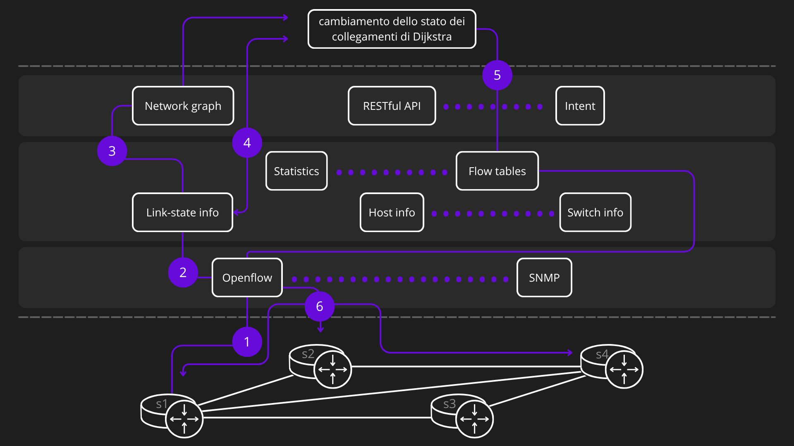
- Rilevazione del guasto. Lo switch s1 rileva la caduta del collegamento con s2 e invia al controller SDN un messaggio OpenFlow Port-Status.
- Aggiornamento dello stato della rete. Il controller riceve la notifica e aggiorna il database contenente lo stato della topologia della rete.
- Ricalcolo dei percorsi. L’applicazione di controllo che implementa l’algoritmo di Dijkstra utilizza la topologia aggiornata per calcolare i nuovi cammini minimi.
- Individuazione degli switch da aggiornare. Il controller determina quali switch devono modificare le proprie Flow Table in base ai nuovi percorsi.
- Aggiornamento delle Flow Table. Tramite messaggi OpenFlow Modify-State, il controller installa le nuove regole negli switch interessati. Ad esempio, se il collegamento tra s1 e s2 non è più disponibile, il traffico viene instradato attraverso s4, aggiornando le Flow Table di s1, s4 e s2.
- Ripresa dell’inoltro. Una volta completato l’aggiornamento, gli switch riprendono a inoltrare automaticamente i pacchetti seguendo il nuovo percorso, senza eseguire localmente alcun algoritmo di instradamento.
Applicazioni del paradigma March-Action
Gli esempi mostrano come, modificando le regole presenti nelle Flow Table, sia possibile ottenere comportamenti molto diversi senza cambiare l’hardware della rete. È sufficiente che il controller installi regole differenti nei packet switch.
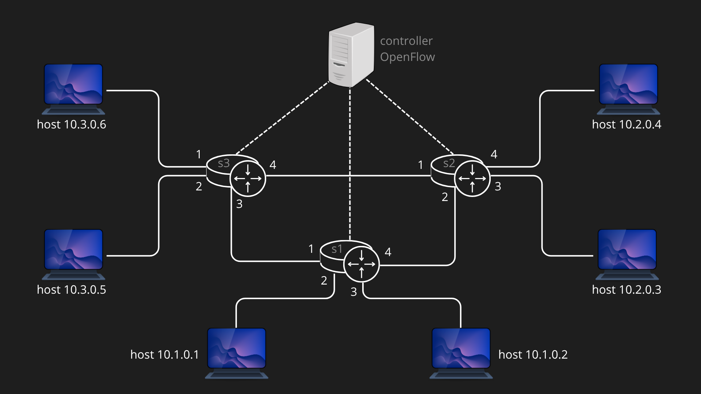
Example
Si vuole fare in modo che i pacchetti inviati dagli host h5 e h6 verso h3 e h4 seguano un percorso preciso: h5/h6 → s3 → s1 → s2 → h3/h4 anziché utilizzare il collegamento diretto tra s3 e s2. Per ottenere questo comportamento, il controller installa regole nelle Flow Table dei packet switch:
- s3 riconosce i pacchetti provenienti dalla rete di h5 e h6 e li inoltra verso s1,
- s1 riconosce gli stessi pacchetti e li inoltra verso s2,
- s2 riconosce infine il destinatario (h3 oppure h4) e invia il pacchetto alla porta corretta.
Ogni packet switch esegue soltanto la propria regola locale, mentre il percorso complessivo è stato deciso dal controller SDN.
Example
Si vuole implementare il bilanciamento del carico (Load Balancing). L’obiettivo è distribuire il traffico su percorsi differenti per evitare che un unico collegamento diventi congestionato. In questo caso:
- i pacchetti provenienti da h3 vengono inoltrati direttamente da s2 a s1,
- i pacchetti provenienti da h4, pur avendo la stessa destinazione, vengono inoltrati da s2 a s3 e solo successivamente raggiungono s1.
La decisione quindi non dipende soltanto dall’indirizzo IP di destinazione, ma anche dall’host sorgente (o, più precisamente, dalla porta di ingresso e dall’indirizzo IP sorgente). Questo comportamento non sarebbe possibile con il tradizionale inoltro basato esclusivamente sull’indirizzo IP di destinazione, mentre è facilmente realizzabile con il paradigma Match-Action.
Example
Nel terzo esempio viene simulato il comportamento di un firewall. Il packet switch s2 è configurato in modo da inoltrare verso i propri host soltanto i pacchetti provenienti dalla rete 10.3... Le regole della Flow Table controllano quindi:
- l’indirizzo IP sorgente,
- l’indirizzo IP di destinazione.
Solo i pacchetti che soddisfano entrambe le condizioni vengono inoltrati. Se un pacchetto non corrisponde ad alcuna regola della Flow Table, viene scartato (oppure, in altri scenari, potrebbe essere inviato al controller SDN). In questo modo il packet switch svolge la funzione di firewall semplicemente grazie alle regole presenti nella propria Flow Table, senza richiedere un dispositivo dedicato.
MODALITÀ DI INSTRADAMENTO
Prima di studiare i protocolli di instradamento è importante distinguere le diverse modalità con cui un pacchetto può essere distribuito nella rete. A seconda del numero di destinatari, l’instradamento può essere unicast, broadcast oppure multicast. Ognuna di queste modalità risponde a esigenze differenti e richiede meccanismi specifici per garantire un inoltro efficiente ed evitare duplicazioni o cicli.
Routing Unicast
Il routing unicast è la modalità di comunicazione più comune nelle reti IP. In questo caso un pacchetto viene inviato da un solo mittente a un solo destinatario.
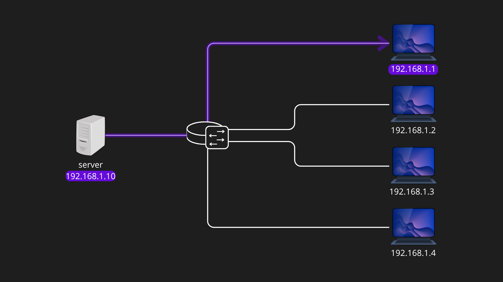
Ogni pacchetto contiene l’indirizzo IP della destinazione e i router determinano il percorso migliore consultando le proprie tabelle di inoltro, costruite dai protocolli di routing come OSPF (all’interno di un Sistema Autonomo) o BGP (tra Sistemi Autonomi differenti). Quasi tutte le comunicazioni Internet, come la navigazione Web, la posta elettronica, SSH o il trasferimento di file, utilizzano il routing unicast.
Routing broadcast
Nel routing broadcast un pacchetto viene inviato a tutti gli host appartenenti alla stessa rete.
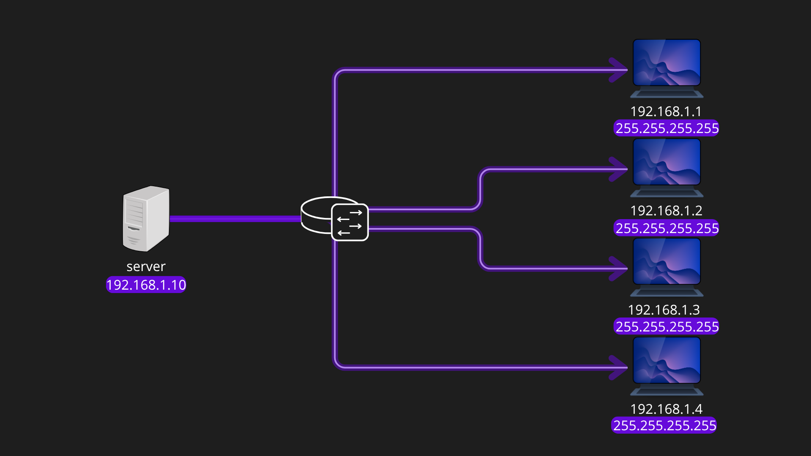
A differenza dell’unicast, non esiste un destinatario specifico: ogni nodo della rete deve ricevere una copia del pacchetto. Questa modalità viene utilizzata quando un’informazione deve essere conosciuta da tutti i dispositivi, ad esempio durante alcune procedure di configurazione o scoperta dei nodi. Il problema principale del broadcast è evitare che il pacchetto venga duplicato indefinitamente a causa della presenza di cicli nella topologia. Per questo motivo vengono utilizzate particolari tecniche di propagazione.
Flooding
Il flooding è la tecnica più semplice per distribuire un pacchetto broadcast. Quando un router riceve un pacchetto, lo inoltra su tutte le interfacce di uscita, tranne quella dalla quale lo ha ricevuto. Ripetendo questa operazione su ogni router, il pacchetto raggiunge rapidamente tutti i nodi della rete. Il flooding non richiede la conoscenza preventiva dei percorsi, ma presenta un importante svantaggio: in presenza di collegamenti ridondanti possono essere generate numerose copie dello stesso pacchetto, con conseguenti sprechi di banda e possibili loop.
Spanning Tree
Per evitare i problemi del flooding puro viene utilizzato lo Spanning Tree. Questa tecnica costruisce preventivamente un albero di copertura (spanning tree) della rete, eliminando logicamente i collegamenti che potrebbero generare cicli. Una volta costruito l’albero, ogni pacchetto broadcast viene inoltrato soltanto lungo i suoi rami. In questo modo:
- ogni nodo riceve una sola copia del pacchetto,
- vengono eliminati i loop,
- il traffico broadcast viene distribuito in maniera efficiente.
Lo Spanning Tree rappresenta quindi un modo controllato di realizzare il flooding per il traffico broadcast.
Routing multicast
Il routing multicast rappresenta un compromesso tra unicast e broadcast.
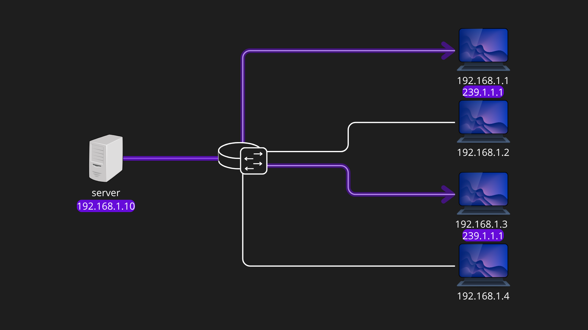
In questo caso un mittente invia un pacchetto a un gruppo specifico di destinatari, evitando di coinvolgere tutti gli host della rete. I router duplicano il pacchetto solo nei punti in cui i percorsi verso i destinatari si separano, riducendo notevolmente il traffico rispetto all’invio di più comunicazioni unicast. Il multicast per funzionare richiede sia un protocollo che gestisca l’appartenenza ai gruppi sia tecniche di instradamento che distribuiscano correttamente i pacchetti.
Protocollo IGMP
Il protocollo IGMP gestisce l’appartenenza degli host ai gruppi multicast. Quando un host desidera ricevere il traffico destinato a un gruppo multicast, invia un messaggio IGMP Join al router locale. Quando non è più interessato alla comunicazione, può abbandonare il gruppo. Il router mantiene quindi l’elenco aggiornato dei gruppi multicast presenti sulla propria rete. È importante sottolineare che IGMP non calcola i percorsi multicast: il suo unico compito è informare i router su quali host desiderano ricevere un determinato flusso.
Flooding multicast
Una tecnica semplice per distribuire inizialmente il traffico multicast consiste nell’utilizzare il flooding multicast. Il router inoltra il pacchetto multicast su tutte le interfacce (tranne quella di ingresso), analogamente al flooding broadcast. Tuttavia, poiché il multicast deve raggiungere solo gli host appartenenti al gruppo, è necessario introdurre meccanismi che eliminino le copie duplicate e impediscano la formazione di cicli. Uno dei meccanismi più utilizzati è il Reverse Path Forwarding (RPF).
Reverse Path Forwarding (RPF)
Il Reverse Path Forwarding (RPF) è una tecnica utilizzata nel routing multicast per controllare il flooding ed eliminare automaticamente i cicli. Quando un router riceve un pacchetto multicast, esegue un semplice controllo:
- determina quale sarebbe il percorso migliore per raggiungere la sorgente del pacchetto,
- verifica se il pacchetto è arrivato proprio attraverso quell’interfaccia.
Se la verifica ha esito positivo (RPF Check), il pacchetto viene inoltrato sulle altre interfacce, in caso contrario viene immediatamente scartato. In questo modo ogni router accetta una sola copia del pacchetto multicast, evitando che lo stesso traffico continui a circolare nella rete. Il RPF può quindi essere visto come una tecnica che controlla il flooding multicast, analogamente a come lo Spanning Tree controlla il flooding broadcast.
ALGORITMI DI INSTRADAMENTO
Gli algoritmi di instradamento (routing algorithms) hanno il compito di determinare il percorso migliore che un pacchetto deve seguire dalla sorgente alla destinazione attraverso la rete di router. Generalmente il percorso scelto è quello a costo minimo, anche se nella pratica possono intervenire anche politiche amministrative (policy) che impongono particolari vincoli sull’instradamento.
Modello a grafo
Per rappresentare la rete viene utilizzato un grafo, in cui:
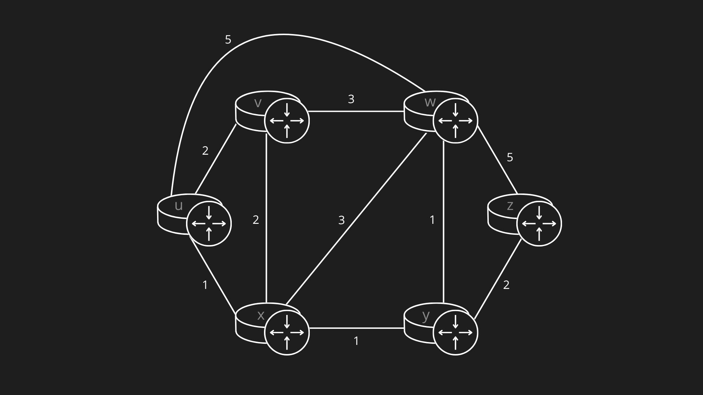
- i nodi rappresentano i router,
- gli archi rappresentano i collegamenti tra router,
- a ogni arco è associato un costo (metrica), che può dipendere, ad esempio, dalla lunghezza del collegamento, dalla velocità o dal costo economico.
Il costo totale di un percorso è dato dalla somma dei costi dei collegamenti che lo compongono. L’obiettivo dell’algoritmo è quindi trovare il percorso a costo minimo (least-cost path).
Tip
Se tutti i collegamenti hanno lo stesso costo, il percorso a costo minimo coincide con il percorso più breve (shortest path), cioè quello con il minor numero di collegamenti attraversati.
Classificazione degli algoritmi di instradamento
Gli algoritmi di instradamento possono essere classificati secondo diversi criteri, in base al modo in cui calcolano i percorsi all’interno della rete e a come reagiscono ai cambiamenti. Le principali classificazioni riguardano il livello di conoscenza della rete (centralizzati o decentralizzati), la capacità di adattarsi alle variazioni della rete (statici o dinamici) e la dipendenza dal livello di congestione dei collegamenti (sensibili o insensibili al carico).
Algoritmi centralizzati (Link-State)
L’instradamento Link-State (LS) è un algoritmo di instradamento centralizzato, nel quale ogni router possiede una conoscenza completa della topologia della rete e del costo di tutti i collegamenti. Per ottenere queste informazioni, ciascun router invia periodicamente agli altri router dei messaggi contenenti lo stato dei propri collegamenti (identità dei vicini e costo dei relativi link). Attraverso questo scambio di informazioni, tutti i router costruiscono una rappresentazione identica dell’intera rete. Poiché ogni router dispone della stessa mappa della rete, tutti possono eseguire lo stesso algoritmo di instradamento ottenendo gli stessi percorsi minimi.
Algoritmo di Dijkstra
Per determinare i percorsi a costo minimo, l’instradamento Link-State utilizza l’algoritmo di Dijkstra. L’algoritmo calcola il percorso a costo minimo tra un nodo sorgente e tutti gli altri nodi della rete. È un algoritmo iterativo: ad ogni iterazione individua il nodo raggiungibile con il costo minore tra quelli non ancora elaborati, ne rende definitivo il percorso e aggiorna i costi dei nodi adiacenti se passando attraverso quel nodo si ottiene un percorso più conveniente.
Pseudocodice:
N’ = {u}
for all v ∈ N:
if v è adiacente a u:
D(v) = c(u,v)
else
D(v) = ∞
while N’ != N:
w = nodo ∉ N’ con D(w) minimo
N’ = N’ ∪ {w}
for all v | (v ∈ N) ∧ (v è adiacente a w) ∧ (v ∉ N’):
if D(w) + c(w,v) < D(v):
D(v) = D(w) + c(w,v)
p(v) = wHelp
- D(v): costo minimo attualmente noto dal nodo sorgente u al nodo v.
- p(v): predecessore del nodo v lungo il percorso minimo attualmente noto.
- N’: insieme dei nodi per i quali il percorso minimo dalla sorgente è stato determinato definitivamente.
- N: insieme totale dei nodi del sistema
Spiegazione:
L’algoritmo inizia inserendo il nodo sorgente u nell’insieme N’.
N’ = {u}Successivamente inizializza i valori di D(v): ai nodi direttamente adiacenti alla sorgente viene assegnato il costo del collegamento che li unisce a u, mentre per tutti gli altri nodi il costo viene inizialmente posto a ∞, poiché non è ancora noto alcun percorso per raggiungerli.
for all v ∈ N:
if v è adiacente a u:
D(v) = c(u,v)
else
D(v) = ∞A ogni iterazione del ciclo viene selezionato il nodo w, esterno a N’, che possiede il valore D(w) minimo. Ciò significa che il percorso dalla sorgente u a w è sicuramente il più conveniente possibile, per questo motivo w viene aggiunto all’insieme N’ e il suo costo non verrà più modificato nelle iterazioni successive.
while N’ != N:
w = nodo ∉ N’ con D(w) minimo
N’ = N’ ∪ {w}Successivamente l’algoritmo esamina tutti i nodi adiacenti a w che non appartengono ancora a N’. Per ciascuno di essi verifica se il percorso che parte da u, passa per w e raggiunge il nodo considerato ha un costo inferiore rispetto al miglior percorso noto fino a quel momento. In tal caso vengono aggiornati:
- D(v) assume il nuovo costo minimo, sempre dalla sorgente u al nodo v,
- p(v) diventa w, indicando che il nuovo percorso minimo raggiunge v passando per w.
for all v | (v ∈ N) ∧ (v è adiacente a w) ∧ (v ∉ N’):
if D(w) + c(w,v) < D(v):
D(v) = D(w) + c(w,v)
p(v) = wIl ciclo viene ripetuto finché N’ = N, cioè finché tutti i nodi della rete sono stati aggiunti all’insieme dei nodi totali. A questo punto ogni nodo conosce il costo minimo dalla sorgente e il relativo predecessore, seguendo la catena dei predecessori è possibile ricostruire il percorso minimo verso ogni destinazione e costruire la tabella di inoltro, nella quale per ogni destinazione viene memorizzato il next hop, cioè il router a cui inoltrare il pacchetto per seguire il percorso a costo minimo.
Complessità computazionale:
Nella versione base, ad ogni iterazione l’algoritmo deve cercare tra tutti i nodi non ancora elaborati quello con il costo minimo. Questa ricerca viene ripetuta per tutti i nodi della rete, ottenendo una complessità temporale pari a O(n²), dove n rappresenta il numero dei nodi. Utilizzando strutture dati più efficienti, come gli heap, la ricerca del nodo minimo diventa più veloce e la complessità dell’algoritmo viene ridotta.
Esempio:
Example
Riprendiamo il grafo che abbiamo visto sopra:
Inizialmente il nodo u conosce soltanto il costo dei propri vicini diretti. Ad ogni iterazione viene selezionato il nodo con costo minimo (prima x, poi y, quindi v, w e infine z) e vengono aggiornati i costi dei percorsi fino a ottenere i cammini minimi verso tutte le destinazioni.
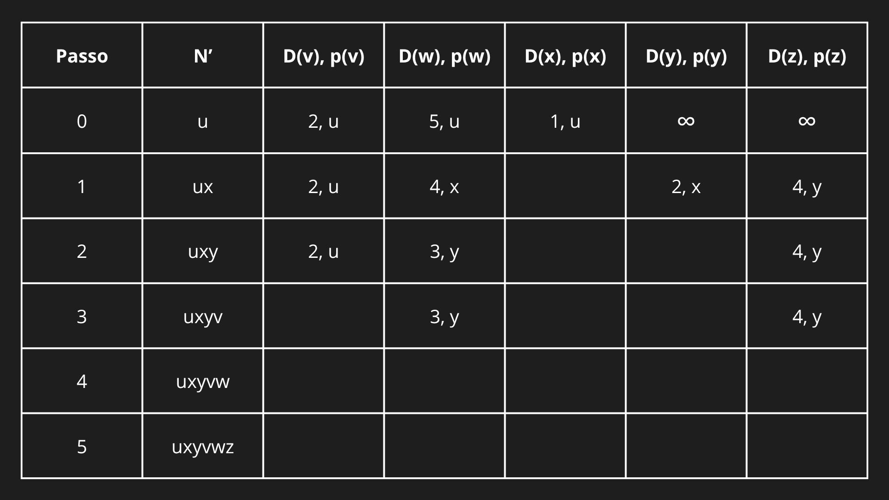
Il risultato finale dell’algoritmo comprende l’albero dei percorsi minimi e la tabella di inoltro con il next hop per ogni percorso a partire da u verso ogni nodo del sistema.
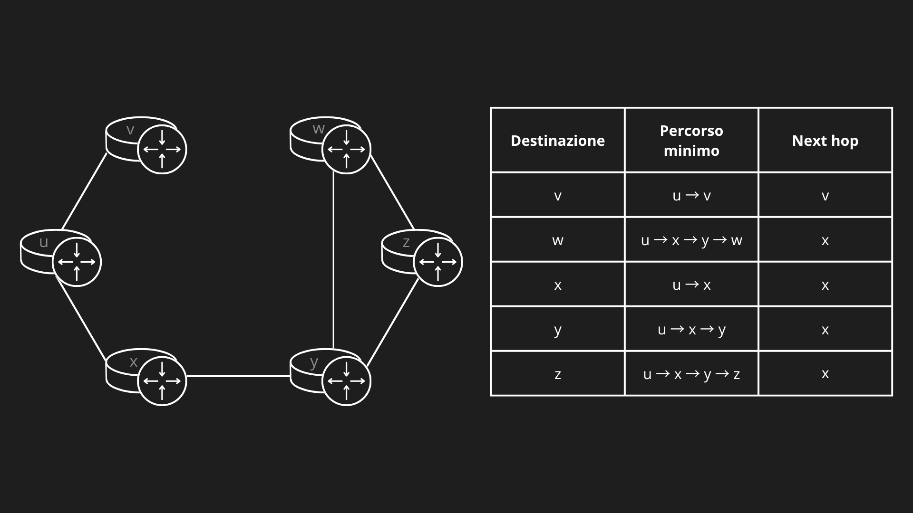
Problema delle oscillazioni:
L’algoritmo di Dijkstra può presentare un problema quando il costo dei collegamenti viene calcolato in funzione del livello di congestione della rete. In questo caso i costi non sono fissi, ma cambiano continuamente in base alla quantità di traffico che attraversa ciascun collegamento. Se tutti i router eseguono contemporaneamente l’algoritmo utilizzando gli stessi costi, tenderanno a individuare gli stessi percorsi come i più convenienti. Di conseguenza, gran parte del traffico verrà instradata sugli stessi collegamenti, che diventeranno rapidamente più congestionati. L’aumento della congestione comporta un aumento del costo di tali collegamenti. Alla successiva esecuzione dell’algoritmo, questi percorsi non risulteranno più i migliori e tutti i router sceglieranno percorsi alternativi. Anche questi nuovi percorsi finiranno però per congestionarsi, mentre quelli precedentemente utilizzati torneranno ad avere costi inferiori. Il risultato è che i router continueranno a cambiare periodicamente i percorsi scelti, senza raggiungere una situazione stabile. Questo fenomeno prende il nome di oscillazione dell’instradamento (routing oscillation). Per limitare il problema si possono adottare diverse strategie. Nella pratica si preferisce fare in modo che i router non eseguano l’algoritmo nello stesso istante, introducendo tempi di aggiornamento differenti o casuali. In questo modo le modifiche ai percorsi avvengono gradualmente e si riduce il rischio che tutti i router cambino contemporaneamente instradamento, evitando così oscillazioni sincronizzate.
Algoritmi decentralizzati (Distance-Vector)
L’instradamento Distance-Vector (DV) è un algoritmo di instradamento distribuito, nel quale nessun router possiede una conoscenza completa della topologia della rete. Ogni router conosce solamente il costo dei collegamenti verso i propri vicini diretti e riceve periodicamente da essi informazioni sulle distanze stimate verso tutte le destinazioni della rete. Lo scambio continuo di queste informazioni permette ai router di migliorare progressivamente la propria conoscenza della rete fino a convergere ai percorsi minimi, senza che sia necessaria una sincronizzazione globale tra tutti i nodi.
Formula di Bellman-Ford
L’algoritmo Distance-Vector si basa sulla formula di Bellman-Ford, che permette di calcolare il costo minimo per raggiungere una destinazione utilizzando esclusivamente le informazioni ricevute dai router vicini. Per un nodo x e una destinazione y, il costo minimo è dato da: dove:
- c(x,v) è il costo del collegamento tra il nodo x e il vicino v,
- dv(y) è il costo minimo che il vicino v conosce per raggiungere la destinazione y,
- il minimo viene calcolato considerando tutti i vicini di x.
L’idea è semplice: per raggiungere una destinazione, un router deve necessariamente inoltrare il pacchetto a uno dei propri vicini. Per ogni vicino viene quindi calcolato il costo complessivo del percorso, dato dalla somma del costo del collegamento locale e della distanza comunicata dal vicino. Il percorso scelto sarà quello con costo complessivo minimo. Questa formula costituisce il principio fondamentale dell’algoritmo Bellman-Ford.
Algoritmo di Bellman-Ford
L’algoritmo di Bellman-Ford è il meccanismo con cui viene realizzato l’instradamento Distance-Vector. Ogni router mantiene:
- il costo dei collegamenti verso tutti i propri vicini,
- il proprio vettore delle distanze, cioè la stima del costo minimo verso ogni destinazione,
- i vettori delle distanze ricevuti dai router vicini.
Quando cambia il costo di un collegamento oppure viene ricevuto un nuovo vettore delle distanze, il router aggiorna il proprio vettore applicando la formula di Bellman-Ford. Se almeno una stima cambia, il nuovo vettore viene inviato ai router vicini, che ripetono lo stesso procedimento.
Pseudocodice:
for all x ∈ N:
for all y ∈ N:
Dₓ(y) = c(x,y) # c(x,y) = ∞ se y non è adiacente
for all vicino u:
Dᵤ(y) = ?
for all vicino u:
invia Dₓ = [Dₓ(y) : y ∈ N] a u
while true:
wait:
- variazione del costo del collegamento c(x,u)
or
- ricezione del vettore delle distanze Dᵤ da u
for all y ∈ N:
Dₓ(y) = minᵤ{c(x,u) + Dᵤ(y)}
if Dₓ è cambiato per almeno una destinazione y:
for all vicino u:
invia Dₓ = [Dₓ(y) : y ∈ N] a uHelp
- Dx(y): costo minimo attualmente noto dal nodo x al nodo y.
- u: uno qualsiasi dei nodi vicini al nodo x.
- c(x,y): costo del collegamento diretto tra x e y (vale ∞ se i due nodi non sono direttamente collegati).
- N: insieme totale dei nodi del sistema
Spiegazione:
L’algoritmo viene eseguito indipendentemente da ogni nodo della rete. Per questo motivo lo pseudocodice inizia con un ciclo che considera ciascun nodo x come router che esegue l’algoritmo.
for all x ∈ N:Successivamente il nodo x inizializza il proprio vettore delle distanze. Per ogni altro router destinazione y nel sistema viene memorizzato il costo del collegamento diretto c(x,y). Se y non è un vicino diretto di x, il costo viene posto a ∞, poiché inizialmente il nodo non conosce ancora alcun percorso per raggiungerlo.
for all y ∈ N:
Dₓ(y) = c(x,y)Il nodo x memorizza poi i vettori delle distanze dei propri vicini. Durante l’inizializzazione tali informazioni non sono ancora note e verranno riempite non appena i vicini invieranno i loro primi aggiornamenti.
for all vicino u:
Dᵤ(y) = ?Terminata l’inizializzazione, il nodo invia il proprio vettore delle distanze a tutti i router adiacenti, in modo che possano utilizzarlo per calcolare i propri percorsi minimi.
for all vicino u:
invia Dₓ = [Dₓ(y) : y ∈ N] a uA questo punto inizia la fase operativa dell’algoritmo, che viene eseguita continuamente per tutta la durata del funzionamento della rete.
while true:Il nodo rimane in attesa finché non si verifica uno dei due eventi che richiedono un aggiornamento della tabella di instradamento:
- cambia il costo di un collegamento diretto con un vicino,
- viene ricevuto il vettore delle distanze aggiornato da un router vicino.
wait:
- variazione del costo del collegamento c(x,u)
or
- ricezione del vettore delle distanze Dᵤ da uQuando si verifica uno di questi eventi, il nodo ricalcola il costo minimo verso ogni destinazione y applicando la formula di Bellman-Ford.
for all y ∈ N:
Dₓ(y) = minᵤ {c(x,u) + Dᵤ(y)}Se, dopo il ricalcolo, almeno uno dei valori del vettore delle distanze è cambiato, il nodo invia immediatamente il nuovo vettore a tutti i propri vicini. Questi, ricevuto l’aggiornamento, eseguiranno lo stesso procedimento, propagando progressivamente le nuove informazioni in tutta la rete.
if Dₓ è cambiato per almeno una destinazione y:
for all vicino u:
invia Dₓ = [Dₓ(y) : y ∈ N] a uIl ciclo viene eseguito per tutta la durata del funzionamento della rete. Quando non si verificano più variazioni dei costi e nessun router invia nuovi aggiornamenti, l’algoritmo entra automaticamente in uno stato di quiete (quiescent state), nel quale tutti i router hanno raggiunto una visione coerente dei percorsi minimi. Qualora la rete subisca una modifica, il processo riprende automaticamente.
Esempio:
Example
Prendiamo un sistema con 3 router:
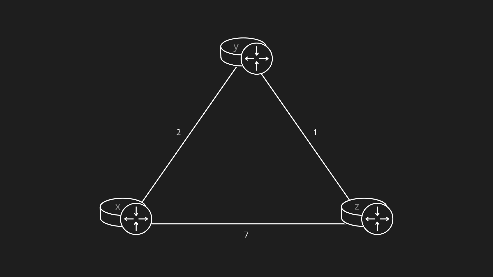
Inizialmente ogni router conosce solamente il costo dei collegamenti diretti verso i propri vicini e costruisce il proprio vettore delle distanze. Successivamente ogni router invia il proprio vettore ai vicini. Dopo aver ricevuto gli aggiornamenti, ciascun router ricalcola i costi minimi applicando la formula di Bellman-Ford e aggiorna il proprio vettore delle distanze.
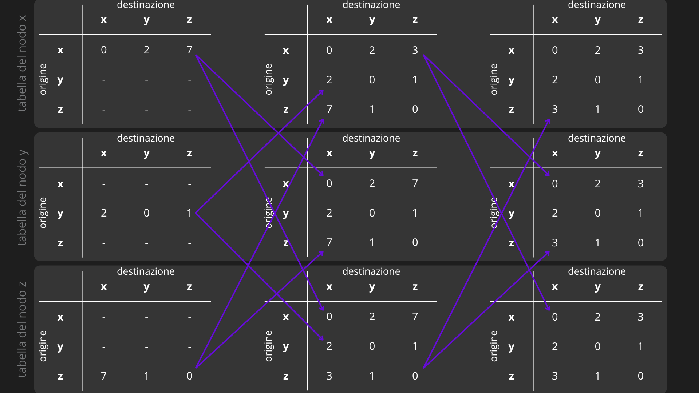
Se uno o più valori cambiano, il nuovo vettore viene nuovamente trasmesso ai vicini, che ripetono lo stesso procedimento. Questo processo continua fino a quando nessun router modifica più il proprio vettore delle distanze. In tale situazione l’algoritmo ha raggiunto la convergenza e tutti i router conoscono il costo minimo verso ogni destinazione.
Aggiornamento dei costi dei collegamenti
Quando cambia il costo di un collegamento, il router direttamente interessato aggiorna immediatamente il proprio vettore delle distanze e, se necessario, lo invia ai router vicini. Se il costo di un collegamento diminuisce, la nuova informazione si propaga molto rapidamente nella rete. I router ricevono il nuovo vettore, ricalcolano i propri percorsi minimi e, se ottengono un costo inferiore, propagano a loro volta l’aggiornamento. Generalmente sono sufficienti poche iterazioni affinché tutti i router convergano verso i nuovi percorsi ottimali. Al contrario, quando il costo di un collegamento aumenta, la convergenza può risultare molto più lenta e possono verificarsi problemi di instradamento.
Problema del conteggio all’infinito
Uno dei principali limiti dell’algoritmo Distance-Vector è il problema del conteggio all’infinito (Count to Infinity). Quando un collegamento aumenta notevolmente di costo oppure si interrompe, i router non dispongono di una visione globale della rete e possono continuare a credere che un vicino conosca ancora un percorso conveniente verso una determinata destinazione. Di conseguenza due o più router possono iniziare a inoltrarsi reciprocamente i pacchetti, formando un ciclo di instradamento (routing loop). Durante questo processo ciascun router aggiorna progressivamente il costo della destinazione aumentando il valore di una unità (o del costo del collegamento) ad ogni scambio di informazioni. Poiché nessun router è immediatamente consapevole dell’errore, il costo continua a crescere lentamente fino a quando uno dei router individua finalmente un percorso alternativo oppure considera la destinazione irraggiungibile. Questo fenomeno rallenta notevolmente la convergenza dell’algoritmo e può causare la perdita o il ritardo dei pacchetti, che rimangono intrappolati nel ciclo di instradamento.
Inversione avvelenata (Poisoned Reverse)
Per limitare il problema dei cicli tra due router adiacenti viene utilizzata una tecnica chiamata inversione avvelenata (Poisoned Reverse). L’idea consiste nel fatto che, se un router raggiunge una determinata destinazione passando attraverso un vicino, comunica proprio a quel vicino che la distanza verso quella destinazione è infinita, anche se in realtà conosce il percorso corretto. In questo modo il vicino non considererà mai quel router come possibile percorso per raggiungere la stessa destinazione, evitando che i due router inizino a inoltrarsi reciprocamente i pacchetti e formando così un ciclo. L’inversione avvelenata risolve efficacemente i cicli che coinvolgono due router adiacenti, ma non è sufficiente per eliminare i cicli più complessi che coinvolgono tre o più router. Per questo motivo i moderni protocolli di instradamento adottano ulteriori meccanismi per migliorare la stabilità e ridurre i tempi di convergenza.
Algoritmi statici e dinamici
Gli algoritmi statici modificano i percorsi molto raramente, generalmente solo in seguito all’intervento manuale di un amministratore di rete. Gli algoritmi dinamici, invece, aggiornano automaticamente i percorsi quando cambiano la topologia della rete o le condizioni dei collegamenti. Sono più flessibili e adattabili, ma possono essere soggetti a problemi come loop di instradamento o oscillazioni dei percorsi.
Algoritmi sensibili e insensibili al carico
Gli algoritmi sensibili al carico (load-sensitive) modificano il costo dei collegamenti in funzione del livello di congestione della rete, cercando di distribuire meglio il traffico. Gli algoritmi insensibili al carico (load-insensitive) utilizzano invece costi prefissati che non dipendono dalla congestione istantanea dei collegamenti. I principali protocolli di instradamento di Internet, come RIP, OSPF e BGP, appartengono a questa categoria.
PROTOCOLLI DI INSTRADAMENTO
I protocolli di instradamento sono gli insiemi di regole e algoritmi che permettono ai router di scambiarsi informazioni sulla rete e di costruire le proprie tabelle di instradamento. Grazie a questi protocolli, ogni router è in grado di determinare il percorso più conveniente per inoltrare i pacchetti verso una determinata destinazione. I protocolli di instradamento possono essere distinti in due grandi categorie:
- protocolli intra-AS (Interior Gateway Protocol, IGP), utilizzati per l’instradamento all’interno di uno stesso Sistema Autonomo,
- protocolli inter-AS (Exterior Gateway Protocol, EGP), utilizzati per l’instradamento tra Sistemi Autonomi differenti.
Sistemi autonomi
Un Sistema Autonomo è un insieme di router e reti appartenenti alla stessa organizzazione e gestiti secondo un’unica politica amministrativa. Ogni AS è identificato da un Autonomous System Number (ASN), assegnato in modo univoco da ICANN. All’interno di ciascun Sistema Autonomo, come già evidenziato, viene utilizzato un IGP, mentre la comunicazione tra Sistemi Autonomi differenti è affidata a protocolli EGP.
Attention
I Sistemi Autonomi sono stati introdotti per risolvere due problemi fondamentali che rendono impraticabile la gestione di Internet come un’unica rete:
- Scalabilità. Con milioni di router e reti connesse, ogni router dovrebbe memorizzare una quantità enorme di informazioni sulla topologia della rete e scambiare continuamente aggiornamenti con tutti gli altri router. Ciò richiederebbe un elevato consumo di memoria, banda e capacità di elaborazione, rendendo gli algoritmi di instradamento poco efficienti e, in alcuni casi, incapaci di convergere.
- Autonomia amministrativa. Internet è composta da migliaia di reti appartenenti a provider e organizzazioni differenti, ognuna delle quali desidera amministrare autonomamente la propria infrastruttura, scegliendo i protocolli e le politiche di instradamento da adottare senza dover condividere all’esterno tutti i dettagli della propria rete.
OSPF (Open Shortest Path First)
OSPF (Open Shortest Path First) è uno dei principali protocolli di instradamento intra-AS ed è ampiamente utilizzato nelle reti degli Internet Service Provider e nelle grandi reti aziendali. Il termine Open indica che il protocollo è uno standard pubblico, le cui specifiche sono disponibili liberamente. OSPF è un protocollo di tipo Link-State.
Ruolo di OSPF
Ogni router raccoglie informazioni sullo stato dei propri collegamenti (Link-State Advertisement - LSA) e le diffonde mediante flooding a tutti gli altri router appartenenti allo stesso Sistema Autonomo. Grazie a questi messaggi tutti i router costruiscono un database identico dello stato della rete. Su questa mappa ciascun router esegue localmente l’algoritmo di Dijkstra, ottenendo l’albero dei cammini minimi e costruendo la propria tabella di inoltro. I costi dei collegamenti non vengono determinati automaticamente dal protocollo, ma sono configurati dall’amministratore della rete. Ad esempio:
- tutti i collegamenti possono avere costo 1 (per minimizzare il numero di hop),
- i costi possono essere scelti inversamente proporzionali alla banda disponibile, così da preferire collegamenti più veloci.
OSPF non impone quindi una politica di assegnazione dei costi, ma calcola semplicemente i percorsi minimi in base ai valori configurati.
Aggiornamento delle informazioni
Quando cambia lo stato di un collegamento (ad esempio varia il costo oppure un collegamento diventa indisponibile), il router genera immediatamente un nuovo annuncio Link-State e lo diffonde tramite flooding. Anche in assenza di modifiche, ogni router invia periodicamente gli annunci (almeno ogni 30 minuti) per aumentare l’affidabilità del protocollo e mantenere sincronizzati i database. I messaggi OSPF vengono trasportati direttamente da IP utilizzando il protocol number 89. OSPF implementa inoltre meccanismi propri per: trasmettere in modo affidabile gli aggiornamenti, verificare che i router vicini siano raggiungibili mediante messaggi HELLO, sincronizzare il database dello stato dei collegamenti tra router adiacenti.
Supporto gerarchico
Una delle caratteristiche più importanti di OSPF è la possibilità di suddividere un Sistema Autonomo in più aree. All’interno di ogni area i router condividono esclusivamente le informazioni relative ai collegamenti della propria area, riducendo così la quantità di informazioni da memorizzare e propagare. Le diverse aree sono collegate da uno o più Area Border Router (ABR). Tra tutte le aree ne esiste una particolare, chiamata Backbone Area, che costituisce il nucleo dell’intero Sistema Autonomo e attraverso la quale viene instradato il traffico destinato ad altre aree. Quando un pacchetto deve raggiungere una destinazione appartenente a un’altra area, esso segue il seguente percorso:
- raggiunge il router di confine della propria area,
- attraversa la Backbone Area,
- raggiunge il router di confine dell’area di destinazione,
- viene inoltrato fino al destinatario finale.
BGP (Border Gateway Protocol)
Dopo aver visto come i protocolli intra-AS (come OSPF) permettono di calcolare i percorsi all’interno di un Sistema Autonomo, è necessario un protocollo che consenta anche l’instradamento tra Sistemi Autonomi differenti. Questo compito è svolto dal Border Gateway Protocol (BGP), il protocollo di instradamento inter-AS utilizzato su Internet. BGP è un protocollo decentralizzato, asincrono e basato sull’approccio Distance-Vector. Il suo obiettivo è permettere ai diversi AS di scambiarsi informazioni sulla raggiungibilità delle reti e di determinare il percorso migliore per raggiungerle.
Ruolo di BGP
A differenza dei protocolli intra-AS, che calcolano i percorsi all’interno di un singolo Sistema Autonomo, BGP determina le rotte verso le reti appartenenti ad altri AS. In particolare, BGP permette a ogni router di:
- conoscere quali prefissi di rete sono raggiungibili attraverso gli altri Sistemi Autonomi,
- scegliere il percorso migliore per raggiungere ciascun prefisso tra quelli disponibili.
Le informazioni gestite da BGP non riguardano singoli host, ma prefissi CIDR, cioè reti o insiemi di reti (ad esempio 138.16.68.0/22). Le tabelle di inoltro dei router contengono quindi associazioni tra un prefisso di rete e l’interfaccia attraverso cui inoltrare i pacchetti destinati a quel prefisso.
Distribuzione delle informazioni di instradamento
BGP diffonde le informazioni di raggiungibilità attraverso lo scambio di annunci (announcement) tra router appartenenti ai diversi Sistemi Autonomi. I router stabiliscono tra loro connessioni TCP semi-permanenti sulla porta 179, ciascuna connessione prende il nome di sessione BGP. Esistono due tipi di sessione:
- eBGP (external BGP): collega router appartenenti a Sistemi Autonomi differenti e viene utilizzata per scambiare informazioni tra AS.
- iBGP (internal BGP): collega router appartenenti allo stesso Sistema Autonomo e serve a distribuire internamente le informazioni ricevute tramite eBGP.
Quando un router gateway apprende l’esistenza di un nuovo prefisso da un AS esterno tramite eBGP, lo propaga a tutti i router del proprio AS tramite iBGP. In questo modo tutti i router del Sistema Autonomo vengono a conoscenza delle reti raggiungibili e dei possibili percorsi per raggiungerle.
Attributi delle rotte BGP
Ogni annuncio BGP non contiene soltanto il prefisso di rete, ma anche una serie di attributi, che insieme al prefisso costituiscono una rotta (route). Tra gli attributi più importanti vi sono:
- AS-PATH, che contiene l’elenco dei Sistemi Autonomi attraversati dall’annuncio. Oltre a fornire informazioni sul percorso, permette di evitare cicli: se un router trova il proprio AS all’interno della lista, scarta l’annuncio.
- NEXT-HOP, che indica l’indirizzo IP del router attraverso il quale inizia il percorso verso il prefisso annunciato. Questo valore consente al protocollo intra-AS (ad esempio OSPF) di determinare come raggiungere il router di uscita dal proprio Sistema Autonomo.
Selezione del percorso migliore
Un router può ricevere più percorsi per raggiungere lo stesso prefisso. In questo caso BGP applica una serie di regole per selezionare una sola rotta. Le principali regole, nell’ordine in cui vengono applicate, sono:
- viene scelta la rotta con Local Preference più alta (valore configurato dall’amministratore della rete),
- a parità di Local Preference, viene scelta la rotta con AS-PATH più corto,
- se il pareggio persiste, viene scelta la rotta il cui NEXT-HOP è raggiungibile con il costo intra-AS minore (hot potato routing),
- se necessario, vengono utilizzati ulteriori criteri previsti dal protocollo (ad esempio gli identificatori BGP).
Questo meccanismo permette di combinare le politiche amministrative dell’AS con criteri di efficienza nella scelta del percorso.
Hot Potato Routing
Uno dei criteri utilizzati da BGP è l’Hot Potato Routing. L’idea è che ogni Sistema Autonomo cerchi di trasferire il traffico verso un AS vicino il prima possibile, minimizzando il costo del percorso all’interno della propria rete, senza considerare il costo che il pacchetto dovrà sostenere successivamente negli altri AS. Per farlo, il router sceglie il percorso il cui NEXT-HOP è raggiungibile con il costo intra-AS più basso, calcolato dal protocollo interno (ad esempio OSPF).
Anycast IP
BGP viene utilizzato anche per implementare il servizio IP Anycast. Con Anycast, più server distribuiti geograficamente condividono lo stesso indirizzo IP e lo annunciano tramite BGP. Quando un client invia un pacchetto verso quell’indirizzo, i router Internet scelgono automaticamente il percorso migliore secondo le normali regole di selezione di BGP, indirizzando la richiesta verso il server ritenuto più conveniente (generalmente il più vicino in termini di percorso). Questa tecnica è ampiamente utilizzata dal DNS, in particolare per i server root, così da ridurre i tempi di risposta e migliorare l’affidabilità del servizio.
Come una rete diventa raggiungibile da Internet
Per rendere una nuova rete accessibile da Internet non è sufficiente ottenere un collegamento a un ISP e un blocco di indirizzi IP. Dopo aver configurato gli indirizzi IP e registrato il proprio dominio nel sistema DNS, è necessario che il resto di Internet venga a conoscenza del prefisso di rete assegnato. Questo avviene proprio grazie a BGP: l’ISP annuncia il prefisso ricevuto dal nuovo cliente agli altri ISP, che a loro volta propagano l’informazione fino a raggiungere tutti i Sistemi Autonomi di Internet. In questo modo ogni router può inserire il nuovo prefisso nelle proprie tabelle di inoltro e instradare correttamente i pacchetti destinati a quella rete.
PROTOCOLLO ICMP
Il Internet Control Message Protocol (ICMP) è un protocollo di supporto al livello di rete utilizzato da host e router per scambiarsi informazioni di controllo. La sua funzione principale è segnalare errori e fornire informazioni sullo stato della rete, ad esempio quando una destinazione non è raggiungibile oppure un pacchetto non può essere consegnato. Sebbene sia strettamente legato a IP, ICMP non fa parte del protocollo IP, ma opera immediatamente al di sopra di esso. I messaggi ICMP vengono infatti incapsulati all’interno di datagrammi IP, esattamente come avviene per i segmenti TCP o UDP. ICMP svolge quindi un ruolo fondamentale nel funzionamento delle reti IP. Strumenti di uso comune come ping e traceroute si basano proprio sui messaggi ICMP per verificare la raggiungibilità degli host e analizzare il percorso seguito dai pacchetti.
Struttura dei messaggi
Ogni messaggio ICMP contiene un campo Tipo e un campo Codice, che identificano la natura della segnalazione. Inoltre include parte del datagramma IP che ha generato il messaggio (l’intestazione e i primi byte del payload), permettendo al mittente di identificare il pacchetto responsabile dell’errore.
GESTIONE DELLA RETE
Dopo aver studiato i protocolli che permettono l’inoltro dei pacchetti e il calcolo dei percorsi, è utile capire come una rete venga monitorata e amministrata. Una rete moderna è infatti composta da numerosi dispositivi (router, switch, server, host e altri apparati) che devono essere costantemente controllati per verificarne il corretto funzionamento, individuare eventuali guasti e modificarne la configurazione. La gestione della rete comprende quindi tutte le attività necessarie per monitorare lo stato dei dispositivi, raccogliere statistiche sul loro funzionamento, configurarne i parametri e ricevere notifiche in caso di anomalie. Lo scopo è garantire che la rete continui a funzionare correttamente e soddisfi i requisiti di prestazioni e affidabilità.
Architettura di gestione
Un sistema di gestione della rete è composto dai seguenti elementi fondamentali:
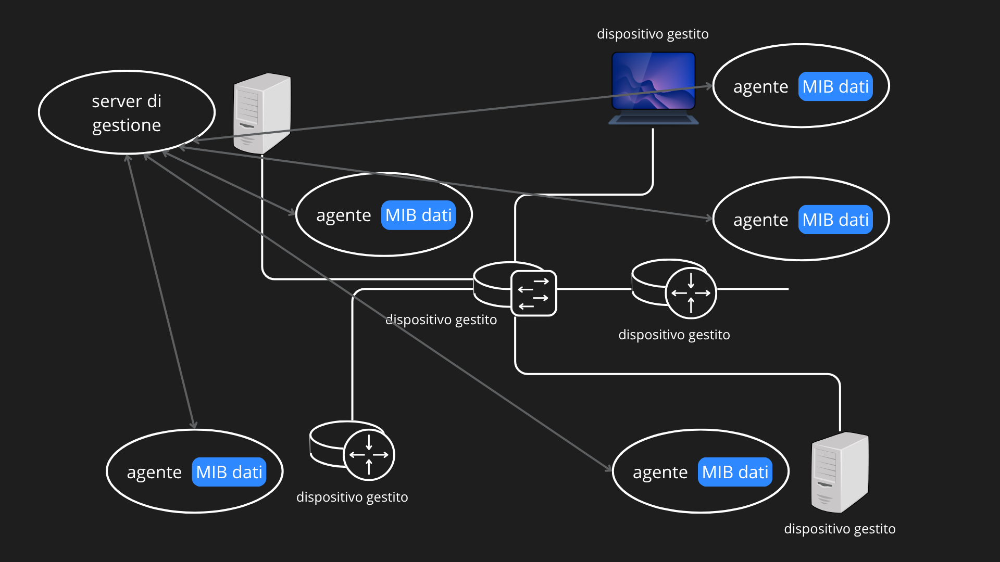
- Server di gestione (Manager): sistema utilizzato dall’amministratore di rete per monitorare, analizzare e configurare i dispositivi della rete. Raccoglie le informazioni provenienti dagli agenti ed è il punto centrale di controllo.
- Dispositivi gestiti (Managed Devices): tutti gli apparati della rete (router, switch, host, server, stampanti…) che possono essere monitorati e configurati dal sistema di gestione.
- Management Information Base (MIB): base di dati logica presente in ogni dispositivo gestito che contiene gli oggetti gestiti, ossia tutte le informazioni consultabili o modificabili (statistiche, configurazioni, stato delle interfacce…).
- Agente di gestione (Agent): software in esecuzione su ogni dispositivo gestito che comunica con il manager, accede agli oggetti della MIB, risponde alle richieste e può inviare notifiche in caso di eventi o anomalie.
- Protocollo di gestione: protocollo che permette la comunicazione tra manager e agent, consentendo di interrogare i dispositivi, modificarne la configurazione e ricevere notifiche sul loro stato. Il protocollo di gestione più diffuso è SNMP (Simple Network Management Protocol).
Protocollo SNMP
SNMP (Simple Network Management Protocol) è il protocollo di livello applicazione utilizzato per la gestione delle reti. Consente al manager e agli agent di scambiarsi informazioni per monitorare lo stato dei dispositivi e modificarne la configurazione. Generalmente SNMP utilizza UDP come protocollo di trasporto, privilegiando la semplicità e la leggerezza rispetto all’affidabilità. Il funzionamento di SNMP si basa principalmente sul modello request-response. Il manager invia una richiesta all’agent di un dispositivo per leggere o modificare uno o più oggetti della MIB, l’agent esegue l’operazione richiesta e restituisce una risposta contenente i valori richiesti o l’esito della modifica.
Principali PDU di SNMP
SNMP definisce diversi tipi di PDU (Protocol Data Unit), ovvero i messaggi utilizzati per la comunicazione tra manager e agent. Le principali sono:
- GetRequest: richiede il valore di uno o più oggetti della MIB.
- GetNextRequest: legge sequenzialmente gli oggetti di una tabella della MIB.
- GetBulkRequest: recupera grandi quantità di dati della MIB con un’unica richiesta.
- SetRequest: modifica il valore di uno o più oggetti della MIB.
- Response: risposta dell’agent alle richieste del manager.
- InformRequest: consente lo scambio di informazioni tra due manager SNMP.
Oltre alle richieste del manager, SNMP permette anche la comunicazione asincrona. Quando si verifica un evento significativo, come un guasto, la caduta di un collegamento o un’altra anomalia, l’agent invia spontaneamente al manager un messaggio chiamato Trap, senza attendere alcuna richiesta. In questo modo l’amministratore può essere informato tempestivamente dei problemi presenti nella rete.